4.A Special topics and advanced tutorials¶
Multiwfn manual, p.1084–1141. Images:
../imgs/.
The van der Waals surface constructed by superposition of atomic spheres is evidently not quite smooth. Using 0.005 a.u. of electron density isosurface as definition of molecular surface can produce a map with comparable character, while the color transition and contour lines are much smoother (after returning to last menu, you can choose option 1, select 1 and then input 0.005 to switch to this definition).
Note that Multiwfn is also able to plot this kind of map for solid surface, see Section 4 of http://sobereva.com/589 for illustration.
4.A Special topics and advanced tutorials¶
The contents in this section involve more than one main functions of Multiwfn, or contain special usages and skills.
4.A.1 Study variation of electronic structure along IRC path¶
Note: Chinese version of this section is my blog article “Studying chemical reaction process via curve map of bond order and anime of ELF/LOL/RDG isosurface” (http://sobereva.com/200), which essentially covers all content of this section.
In this tutorial, I will briefly show you how to use Multiwfn to study variation of electronic structure along the IRC path of Diels-Alder adduction. We will study the variation of Mayer bond order, and will animate the deformation of ELF isosurface. With similar fashion you can also easily investigate variation of other properties, such as atomic charges, electron density, aromaticity and so on.
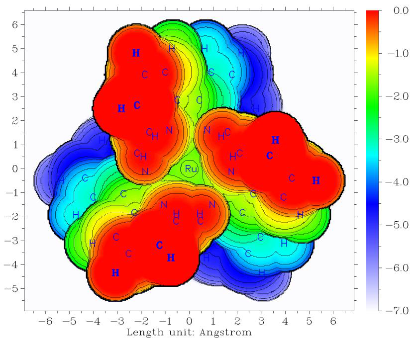
Gaussian 09 was used throughout this tutorial. Unless otherwise specified, all calculations will be performed under Windows 7 64bit system. In this tutorial the files marked by crimson can be found in "examples\IRC" or "examples" folder.
Before starting this tutorial, you should set up running environment for Gaussian first, otherwise Gaussian cannot be properly invoked in Windows environment. The setup method is: Enter “control panel”-“System properties”-“Advanced”, click “Environment variables” button, then click “New” button in “User variables” frame, input GAUSS_EXEDIR as variable name, input the install directory of Gaussian as variable value (e.g. D:\study\g09w\, assuming that g09.exe is in this folder). After that modify "PATH" environment variable to add the install directory of Gaussian into it.
1 Perform IRC calculation Run DA_IRC.gjf by Gaussian to produce DA_IRC.out. We will find this IRC path actually contains 18 and 13 points in the two directions, respectively. B3LYP/6-31+G* is used in this calculation.
2 Generate wavefunction file for each point of IRC Write an input file of single point task of Gaussian (DA_SP.gjf), which will be used as "template" later. The geometry in fact can be arbitrarily filled.
DO NOT write anything here (e.g. %chk)
#p B3LYP/6-31G* nosymm
DA adduction
0 1
C -0.26156800 1.56679300 0.69509600
C -0.26156800 1.56679300 -0.69509600
C 0.50031400 -0.43279300 -1.43864500
C -0.26156800 -1.32826500 -0.70392000
C -0.26156800 -1.32826500 0.70392000
H -1.19341600 1.44689700 -1.23752300
H -1.19341600 1.44689700 1.23752300
H 0.52507600 2.08588200 1.23621300
H 0.38154400 -0.37781200 2.51847500
H 0.38154400 -0.37781200 -2.51847500
H 1.46467600 -0.09643600 -1.07409700
H -1.04094400 -1.89294000 -1.21418700
H -1.04094400 -1.89294000 1.21418700
H 1.46467600 -0.09643600 1.07409700
H 0.52507600 2.08588200 -1.23621300
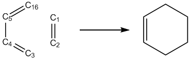
← blank line
← blank line
Notice that the basis set we used here (6-31G) is different to the one used in IRC task (6-31+G), because Mayer bond order does not work well when diffuse functions are presented. By the way, ignoring diffuse functions will not lead to detectable change of ELF isosurface. Also note that the "nosymm" keyword is specified, because if we do not do this Gaussian will automatically translate and rotate the molecule to put it to standard orientation, which may lead to discontinuity problem in the animation of ELF (You will see molecule suddenly jumps in certain frames of the animation).
IRCsplit.exe is a tool used to produce .wfn/.chk file for each point of IRC and SCAN tasks of Gaussian, IRCsplit.f90 is the corresponding source code, by which you can compile Linux version of IRCsplit. Boot up IRCsplit.exe by double clicking its icon and then input
DA_IRC.out //The file of the output file of the IRC task DA_SP.gjf //The template file used to generate single point input files 2 //Only yield .chk files C:\DA_IRCchk\DA //The path and prefix of the finally generated .chk files
Multiwfn session
- 18,13 — The program detected that in DA_IRC.out there are 18 and 13 points in the two directions of IRC, respectively. Here we extract all of them, together with the TS point
Now you can find DA_SP0001.gjf, DA_SP0002.gjf ... DA_SP0032.gjf in current folder. Please manually check one of them to verify the reasonableness of these input files. Note that DA_SP0014.gjf corresponds to the TS geometry.
Build a new folder "C:\DA_IRCchk" and copy the .gjf files as well as the script runall.bat into it. Double clicking the icon of runall.bat, which will invoke Gaussian 09 to run all of the .gjf files.
Now you have DA0001.chk, DA0002.chk ... DA0032.chk in "C:\DA_IRCchk" folder. Copy chk2fch.bat to this folder and run it, then the formchk utility in Gaussian package will be automatically invoked to convert all .chk files to .fch files.
3 Calculate Mayer bond orders for all IRC points Mayer bond order of C1-C16 is the one we are particularly interested in, whose formation is the key process of the DA adduction. Since by default Multiwfn only outputs Mayer bond orders with value > 0.05, while C1-C16 must be very weak at the initial stage of DA adduction, we need to set "bndordthres" parameter in the settings.ini file in Multiwfn folder to 0.0, so that all of the bond orders larger than 0.0 can be outputted.
Write a plain text file (MBObatch.txt) and put it into Multiwfn folder, the content is
Multiwfn session
- 9 — Enter bond order analysis module
- 1 — Calculate Mayer bond order
Note: If you are confused why this file is written in such manner, please read Section 5.2 to study how to run Multiwfn in silent mode.
Then write a plain text file with .bat suffix (MBObatchrun.bat) and put it into Multiwfn folder, the content should be
for /f %%i in ('dir C:\DA_IRCchk\*.fch /b') do Multiwfn C:\DA_IRCchk\%%i < MBObatch.txt >
C:\DA_IRCchk\%%~ni.txt
batchrun.bat in fact is a Windows batch script. Double clicking its icon to run it, the .fch files in "C:\DA_IRCchk\" folder will be sequentially loaded into Multiwfn, and the calculated Mayer bond orders will be exported to .txt files in the same folder.
4 Plot Mayer bond order Now what we should do next is to extract the bond order of C1-C16 from the DA0001.txt, DA0002.txt ... DA0032.txt. The most convenient way is to utilize "grep" command in Linux. So we copy all of these .txt files to a folder in Linux system, then in this folder we run
grep "1(C ) 16(C )" * > out.txt
The out.txt file now contains C1-C16 bond order of all points in the IRC:
DA0001.txt:# 9: 1(C ) 16(C ) 0.05929972
DA0002.txt:# 7: 1(C ) 16(C ) 0.06877306
DA0003.txt:# 7: 1(C ) 16(C ) 0.07926829
DA0004.txt:# 7: 1(C ) 16(C ) 0.09089774
DA0005.txt:# 7: 1(C ) 16(C ) 0.10380144
DA0006.txt:# 7: 1(C ) 16(C ) 0.11815120
DA0007.txt:# 7: 1(C ) 16(C ) 0.13417828
DA0008.txt:# 7: 1(C ) 16(C ) 0.15218555
... The last column is the values of Mayer bond order of C1-C16, you can plot them by your favorite program now, you will see
1.1
1.0
0.9 C1-C16
0.8
Mayer bond order 0.7 0.6 0.5 0.4 0.3 TS
0.2
0.1
024681012141618202224262830320.0
IRC point
Clearly, C1-C16 become stronger and stronger as the reaction proceeds, its Mayer bond order gradually increases to 1.0 (typical single bond).
With the same method, we also calculate the Mayer bond order of C1-C2 and C4-C5, namely run below commands
grep "1(C ) 2(C )" * > out2.txt
grep "4(C ) 5(C )" * > out3.txt
Plot the data in out.txt, out2.txt and out3.txt together, you will see
TS
2.0
1.8
1.6
1.4
Mayer bond order 1.2 1.0 0.8 0.6 C1-C16 C1-C2 C4-C5
0.4
0.2
024681012141618202224262830320.0
IRC point
This graph vividly shows that the C1-C2 smoothly becomes to a single bond from a double bond during the DA adduction, and the reaction increases the double-bond character of C4-C5 significantly.
5 Make animation of ELF isosurface Next, we make animation to study how the ELF isosurface varies during the DA adduction. Create a plain text file ELFbatch.txt in Multiwfn folder with the following content
Multiwfn session
- 5 — Generate grid data
- 9 — ELF
- 2 — Medium-quality grid
- 2 — Export the grid data to ELF.cub in current folder
Create a script file named ELFbatchrun.bat, whose content is
for /f %%i in ('dir C:\DA_IRCchk\*.fch /b') do (
Multiwfn C:\DA_IRCchk\%%i < ELFbatch.txt
rename ELF.cub %%~ni.cub
)
Run ELFbatchrun.bat, Multiwfn will sequentially load the .fch files in "C:\DA_IRCchk" and export the corresponding ELF grid data to DA0001.cub, DA0002.cub ... DA0032.cub in current folder.
We use VMD 1.9.1 program (freely available at http://www.ks.uiuc.edu/Research/vmd/) to render isosurface for these cube files. Move all of the cube files to VMD folder, and create a plain text file named isoall.tcl in the VMD folder, the content is
set isoval 0.88
axes location Off
color Display Background white
for {set i 1} {$i<=32} {incr i} {
set name DA[format %04d $i]
puts "Processing $name.cub..."
mol default style CPK
mol new $name.cub
#translate by -0.100000 0.20000 0.000000
#scale to 0.30
rotate y by 50
rotate z by 90
rotate x by -30
rotate y by -20
mol addrep top
mol modstyle 1 top Isosurface $isoval 0 0 0 1 1
mol modcolor 1 top ColorID 3
render snapshot $name.bmp
mol delete top
}
This file essentially is a VMD script, in which the command set isoval 0.88 means the isosurface of 0.88 will be plotted, the default viewpoint is adjusted by scale, rotate and translate commands. for {set i 1} {$i<=32} {incr i} means the file from DA0001.cub to DA0032.cub will be processed.
Now boot up VMD, and input the command source isoall.tcl in its command line window, then you will have DA0001.bmp, DA0002.bmp ... DA0032.bmp.
There are numerous programs that can convert single-frame graphic files to animation, such as Atani, FFmpeg, Videomach, etc. Here we use ImageMagick tool in Linux to do this, and we choose gif as the animation format, since gif animation can be directly embedded into webpages.
Copy all of the .bmp files to Linux system, and run below command in the corresponding folder:
convert -delay 12 -colors 100 -monitor *.bmp ELF_IRC.gif
in which -delay controls the time interval between each frame in the animation, and -colors determines the number of colors used, the larger the value, the more smoothly the color changes, but the larger the animation file. You can run convert --help to study more arguments of this tool.
If the resultant ELF_IRC.gif cannot be properly displayed on your system, use your webpage explorer or advanced image explorers (e.g. IrfanView) to open it. The deformation of ELF isosurface in this animation very intuitively exhibits how the new bonds are formed and how the characteristic of existing bonds changed.
4.A.2 Calculation of spin population¶
As there are many ways to calculate atomic charges (see Section 3.9 for introduction and 4.7 for examples), there are various ways to calculate spin population. Spin population is defined as the population number of alpha electrons minus that of beta electrons. Spin population is a key quantity for characterizing electronic structure of open-shell systems, i.e. radicals and antiferromagnetic systems. From spin population we can clearly know where the spin electrons are mainly distributed. Moreover, we can discuss contribution from different regions (atomic orbitals, atoms or fragments) to the total magnetic dipole moment m due to electron spin. If spin population of a region is x, then its contribution to m will be xμB, where the Bohr magneton μB=eћ/(2me) (e: electron charge, me: mass of electron) represents the magnetic moment produced by a single electron. Note that in
chemical systems the movement of electrons in orbitals and nuclear spins also have contributions to m, but the magnitude is evidently weaker and thus can often be neglected.
In Multiwfn, the spin population defined in many different ways can be calculated by three modules, they are briefly discussed below.
(1) Population analysis module (main function 7). In this module, if you select Mulliken or Löwdin population analysis, alpha, beta and spin population of each basis function, shell and angular moment orbitals will be outputted. If you select modified Mulliken population analysis (e.g. SCPA), only the alpha/beta/spin population of each atom will be shown. If you first define a fragment via option -1 in main function 7, then spin population of the fragment will be printed together. Do not use these methods when diffuse basis functions are presented in your basis set, otherwise the result may or may not be reliable.
(2) Fuzzy atomic spaces analysis module (main function 15). After you enter this module, select option 1 and choose electron spin density, the spin population of each atom will be shown. They are calculated by integrating electron spin density within fuzzy space of each atom. If you want to obtain spin population of a fragment, you should first use option -5 to define the atoms to be calculated.
By default, the fuzzy atomic space defined by Becke is employed, so the result can be called Becke spin population. If before calculation you selected option -1 to switch to Hirshfeld or Hirshfeld-I fuzzy atomic space, then the result will correspond to Hirshfeld or Hirshfeld-I spin population. All the Becke, Hirshfeld and Hirshfeld-I methods are reliable in all cases. For more details you can consult Section 3.18.
(3) Basin analysis module (main function 17). In this module, you can use AIM method to calculate spin population. Please consult Section 4.17.1 on how to perform integration of real space function in AIM atomic basins. If electron spin density is chosen to be the integrand, then the result will correspond to AIM spin population. In general, I do not suggest using this method, because the computational cost is evidently higher than using population analysis module and fuzzy atomic spaces analysis module.
Overall, if you only need to calculate atomic spin population, using fuzzy atomic spaces analysis module is recommended, while SCPA is also a good choice when no basis function is employed. However, if more detailed information is requested, such as spin population in different angular moment orbitals, please use or Löwdin Mulliken population analysis.
4.A.3 Overview of methods for studying aromaticity¶
Aromaticity is a fundamental concept in organic chemistry and wavefunction analysis realm. Previously I wrote a post to thoroughly discuss the methods for studying aromaticity, see "The methods for measuring aromaticity and their calculations in Multiwfn" (in Chinese, http://sobereva.com/176). Multiwfn supports a very large number of methods for investigating aromaticity, they are summarized in the table below and will be briefly introduced in turn. There are also many other methods, such as induced ring current, ARCS, magnetic susceptibility exaltation, aromatic stabilization energy (ASE), CiLC; they will not be mentioned since they are not directly related to the capacities of Multiwfn.
Method Principle Year Pop. Reliab. Univ. Ref. Anti. \(\sigma/\pi\) Cost Value
1 Molecular orbital Hückel 1951 ++ 0 0 N Y Y 0 +
2 AdNDP Hückel 2008 + 0 + N Y Y 0 +
3 NICS Magnet. 1996 +++ ++ ++ N Y Y + +++
4 ICSS Magnet. 2001 0 ++ ++ N Y Y +++ +
5 HOMA Geom. 1972 + + 0 Y Y N − − +
6 Bird Geom. 1985 − − 0 − Y ? N − − − 7 Multi-center BO Delocal. 1990 + +++ ++ N N Y − +++
8 \(\sigma/\pi\) Delocal. 2004 + 0 − N Y Y 0 +
9 PDI Delocal. 2003 0 + 0 N N Y 0 +
10 ATI Delocal. 2005 − − + 0 N N Y − 0
11 PLR Delocal. 2012 − − + 0 N N Y 0 0
12 ΔDI Delocal. 2003 − − − − N N Y 0 − − 13 FLU, FLU-π Delocal. 2005 0 + 0 Y/N N Y 0 +
14 RCP properties ρ 1997 − 0 0 N N ? − 0
15 Shannon aromat. ρ 2010 N Y N −
16 EL index ρ 2012 − − − − Y Y N − − −
17 AV1245/AVmin Delocal. 2017 − + ++ N N Y − − ++
In the table, "+++", "++", "+", "0", "−" and "− −" correspond to very high, high, relatively high, normal, relatively low and low, respectively. "Y" and "N" stand for "Yes" and "No", respectively. The meaning of each column is given below. Principle: The principle behind the method. "Hückel" = Hückel rule; "Magnet." = Magnetic
properties; "Geom." = Molecular geometry; "Delocal." = Electron delocalization character; "ρ" = Electron density distribution. Year: The year that the method was first proposed. Pop.: Popularity in recent years. Reliab.: Reliability, measuring if the method is able to faithfully reveal aromaticity. Univ.: Universality. A method with high universality must be able to be applied to a wide variety of kinds of systems and situations, such as the rings containing heteroatoms and transition metals, non-equilibrium geometry (e.g. transition state of Diels-Alder addition), excited state, etc. Ref.: If the method relies on reference systems. A universal method must avoid this feature. Anti: If the method is also able to measure anti-aromaticity. σ/π: If the method can be used to separately discuss σ and π aromaticity. Cost: The computational cost to apply the method. Value: The overall value. This is the most important descriptor.
Next, the methods presented in the table above will be briefed sequentially, and how to realize them in Multiwfn will also be mentioned.
- Molecular orbital (MO): The famous Hückel 4n+2 and 4n rule for determining aromaticity character was first explicitly presented in J. Am. Chem. Soc., 73, 876 (1951). For a molecule, if there
are totally 4n+2 electrons in π (σ) MOs, and this set of MOs share the similar delocalization pattern, then the ring involved in these MOs will show π (σ) aromaticity. If there are 4n electrons, then the ring should possess anti-aromaticity. Note that for Möbius type of molecule, the 4n+2 and 4n rule are inverted.
In order to use the Hückel rule to determine aromaticity, one should first pick out proper MOs by visualizing MO isosurfaces, you can use main function 0 for this purpose. If the system is exactly
planar, you can directly make use of the function introduced in Section 3.100.22 to find out the indices of all π MOs.
-
AdNDP (Adaptive natural density partitioning): The MO method shown above commonly is only applicable to the molecule containing only one ring. When there are multiple rings, such as phenanthrene, the MOs are useless, since MOs in general delocalize over the whole molecule and thus cannot be used to study local aromaticity of different rings. The AdNDP method, which was proposed in Phys. Chem. Chem. Phys., 10, 5207 (2008), is able to overcome this difficulty. AdNDP has been carefully introduced in Section 3.17, and many examples are given in Section 4.14.
-
NICS (Nucleus-independent chemical shift): NICS uses the negative value of magnetic shielding value at ring center to measure its aromaticity. This is the most popular aromaticity index nowadays, it was originally proposed in J. Am. Chem. Soc., 118, 6317 (1996) and reviewed in Chem.
Rev., 105, 3842 (2005). There are also a few variants, among them the best one to study π aromaticity is NICS(1)ZZ, see Org. Lett, 8, 863 (2006) for comparison. For non-planar systems, it is often difficult to calculate NICS(1)ZZ, in this case you will find the function introduced in Section 3.28.4 extremely useful.
Multiwfn can also scan NICS along a line and thereby plotting one-dimensional NICS curve map, see Section 3.28.13 for introduction and Section 4.25.13 for examples. Multiwfn can also scan NICS in a plane and plot a two-dimensional NICS plane map, see Section 3.28.14 for introduction and Section 4.25.14 for examples. Via the curve and plane maps, considerably richer information can be obtained compared to simply calculating NICS at specific points, and these analyses are much more intuitive.
-
ICSS (Iso-chemical shielding surface): The original paper of ICSS is J. Chem. Soc., Perkin Trans., 2, 1893 (2001). This method analyzes aromaticity by visualizing isosurface of magnetic shielding value around the molecule. See Section 3.28.3 for introduction and Section 4.25.3 for examples. The main drawback of this method is that calculating grid data of magnetic shielding values in a three-dimensional region is fairly time-consuming.
-
HOMA (Harmonic oscillator measure of aromaticity), HOMAc and HOMER: HOMA measures aromaticity based on bond lengths in the ring of interest. See Section 3.28.6 for introduction and Section 4.25.6 for example. HOMAc is an improved version of HOMA and more worth to recommended. HOMA fully fails to characterize aromaticity of T1 state while its variant HOMER works reasonable for this case. See Section 3.28.7 for introduction of HOMAc and HOMER.
-
Bird index: The same as above. 7. Multi-center bond order (MCBO): MCBO is an indicator of electron delocalization ability over a ring and is the aromaticity index I most strongly recommended. Larger MCBO value corresponds to stronger aromaticity. See Section 3.11.2 for introduction. Some applications of MCBO in aromaticity studies can be found in J. Phys. Org. Chem., 26, 473 (2013), Phys. Chem. Chem. Phys., 2, 3381 (2000) and J. Phys. Chem. A, 109, 6606 (2005). It is straightforward to discuss π and σ aromaticities separately by MCBO, that is before calculating MCBO value, first set occupation number of all σ and π MOs to zero respectively by subfunction 22 of main function 100.
Note that the definition of MCBO in many papers differs with that in Multiwfn by a constant coefficient.
- ELF-σ/π: The ELF calculated solely based on π orbitals and all other orbitals are referred to as ELF-π and ELF-σ, respectively. It was argued that the value of bifurcation point of ELF-π (ELF-
σ) is an indicator of π (σ) aromaticity, some applications can be found in J. Chem. Phys., 120, 1670 (2004), J. Chem. Theory Comput., 1, 83 (2005) and Chem. Rev., 105, 3911 (2005). An example of calculating ELF-σ/π is given in Section 4.5.3. In addition, Section 4.4.9 presented an example of studying LOL-π (which is very similar to ELF-π) by plotting plane map. I do not think ELF-σ/π is a very ideal method for measuring aromaticity, mostly because this method often suffers from ambiguity (you will recognize this point if you have used this method to study many practical systems). Also note that the bifurcation values of ELF-σ/π in a lot of papers are incorrect; if you try, you will find it is impossible to reproduce their results at all. (So do not always trust literature!)
-
PDI (Para-delocalization index): This aromaticity index is only applicable to six-membered rings. PDI was first proposed in Chem. Eur. J., 9, 400 (2003) and reviewed in Chem. Rev., 105, 3911 (2005). Please check Section 3.18.6 for introduction of PDI and Section 4.15.2 for example of using PDI.
-
ATI (Average two-center indices): ATI was first proposed in J. Phys. Org. Chem., 18, 706 (2005). In fact, ATI does not contain any new idea, it simply replaces the delocalization indices involved in PDI formula with corresponding Mayer bond orders, and according to the discussions in J. Phys. Chem. A, 109, 9904 (2005), there is no essential difference between Mayer bond order and delocalization index in physical nature. If you would like to use ATI, you can directly calculate Mayer bond order by Multiwfn and then manually calculate ATI according to its formula.
-
PLR (Para linear response index): As ATI, PLR is also very akin to PDI. The only difference between PLR and PDI is that the delocalization indices in PDI are replaced with corresponding condensed linear response kernels. Original paper of PLR is Phys. Chem. Chem. Phys., 14, 3960 (2012). You can check Section 3.18.9 for introduction of PLR and Section 4.15.2 for example of using PLR.
-
ΔDI: This method was proposed in Chem. Eur. J., 9, 400 (2003) for measuring aromaticity of 5-membered systems. Consider the case below
The ΔDI is simply defined as the difference of delocalization index (DI) between the formal C=C bond and the C-C bond. The DI can be either calculated by fuzzy atomic space analysis module or by basin analysis module (though the definitions of atomic spaces are different in these two modules, the results are similar in common). In fact, you can also use Mayer bond order instead of DI. I do
not believe ΔDI is reliable, since aromaticity is an overall property of a system, while the delocalization over C-X bond is completely ignored in \(\Delta DI\)
-
FLU and FLU-π (Aromatic fluctuation index): They were proposed in J. Chem. Phys., 122, 014109 (2005). See Section 3.18.7 for introduction and Section 4.15.2 for example.
-
RCP properties: In Can. J. Chem., 75, 1174 (1997) it was shown that the density and the curvature of density perpendicular to the ring plane at ring critical point (RCP) closely relate to aromaticity of the ring. The larger the density, or the more negative the curvature, the larger the aromaticity. You can use topology analysis module of Multiwfn to apply this method. Detail introduction can be found in Section 3.14.6, an example is given in Section 4.2.1.
-
Shannon aromaticity: This method was proposed in Phys. Chem. Chem. Phys., 12, 4742 (2010), which measures aromaticity based on electron density at bond critical points (BCP) in the
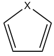
ring. See Section 3.14.6 for introduction and the example given in Section 4.2.1.
-
EL index: The idea of EL index is quite similar to HOMA, the most prominent difference is that the bond lengths in HOMA formula are replaced with electron density ellipticity at BCPs in the ring. For more details see the original paper Struct. Chem., 23, 1173 (2012). Electron density ellipticity at BCPs can be directly calculated by topology analysis module of Multiwfn. Since the ellipticity at BCP is usually unclear for strongly polar bonds, EL index may be unreliable for the ring containing heteroatoms. In addition, EL index shares the same drawback of HOMA, that is reference system is needed. If reference system cannot be obtained, such as the case of metal clusters, this method does not work.
-
Aromaticity indices defined based on information-theoretic quantities: It was demonstrated in ACS Omega, 3, 18370 (2018) that the average information-theoretic quantities of the atoms constituting a ring is closely related to aromaticity. This method is supported as subfunction 12 of main function 15, see Section 3.18.11 for details.
-
AV1245 and AVmin: AV1245 can be viewed as an approximation of MCBO. AVmin is closely related to AV1245, it is able to reveal bottleneck of electron delocalization and thus aromaticity of a selected path. See Section 3.11.10 for introduction and Section 4.9.11 for example.
4.A.4 Overview of methods for predicting reactive sites¶
Note: Much richer information can be found in my blog article “An overview of methods supported by Multiwfn for predicting reaction sites and reactivity of chemical systems” (http://sobereva.com/767).
There are numerous methods able to predict reactive sites of electrophilic, nucleophilic and radical reactions, and almost all of them are supported by Multiwfn. In this section, I will summary and briefly introduce the methods available in Multiwfn. The interested reader is highly recommended to take a look at Acta Phys.-Chim. Sinica, 30, 628 (2014), and Science China Chemistry, 58, 1845 (2015), in which various methods for predicting electrophilic and nucleophilic sites are carefully introduced and thoroughly compared. You may also find the slideshow "Predicting reactive sites" in "Related resources and posts" Section of Multiwfn website useful.
1 Electrostatic potential (ESP). If you are not familiar with ESP, please consult corresponding introduction in Section 2.6. Since electrophile (nucleophile) locally carries positive (negative) charge, and thus tends to be attracted to the region where ESP is negative (positive), the position and value of minima (maxima) of ESP on molecular vdW surface is often used to reveal favorable site of electrophilic (nucleophilic) attack. ESP analysis can be realized via quantitative molecular surface analysis module, see Section 4.12 for detailed introduction and Section 4.12.1 for example. There are also alternative ways to study ESP; as illustrated in Section 4.12.3, the average of ESP on local vdW surface corresponding to each atom is also very useful, and this approach is more reliable and robust than analyzing ESP extrema on vdW surface. For planar system, one can also calculate and compare the ESP value above 1.6Å (approximately equal to vdW radius of carbon) of molecular plane from different atoms to examine their reactivities; to do this, you need to use main function 1, which directly outputs various real space function values at given points.
However, as shown in my paper Acta Phys.-Chim. Sin., 30, 628 (2014), ESP is usually not a reliable property for predicting reactive sites.
2 Average local ionization energy (ALIE) and local electron affinity (LEA). If you are not familiar with ALIE, please read corresponding introduction in Section 2.6. ALIE can be studied in
ways analogous to ESP. The most common way to predict reactive sites in terms of ALIE is analyzing minima of ALIE on vdW surface, see Section 4.12.2 for example. Also, you can study average of ALIE on local vdW surface or evaluate ALIE above 1.6Å of molecular plane for planar system.
ALIE analysis is applicable to electrophilic and radical attacks, but it is useless for nucleophilic attacks. However, the local electron affinity (LEA) defined in similar way may be useful for this purpose, see J. Mol. Model., 9, 342 (2003). LEA is supported in Multiwfn as user-defined function 27, see corresponding description in Section 2.7 for detail. The best way of analyzing LEA should be plotting LEA mapped molecular surface map, as explicitly illustrated in Section 4.12.13.
3 Atomic charges. It is easy to understand that favorable electrophilic and nucleophilic reactive sites should carry negative and positive atomic charges respectively, so that they can attract electrophile and nucleophile to attack them. Multiwfn supports a lot of methods to calculate atomic charges, see Section 3.9 for introduction and Section 4.7 for some instances. Among the available atomic charges, the best one for predicting reactive site purpose may be Hirshfeld, interested readers are suggested to consult J. Phys. Chem. A, 118, 3698 (2014) and especially Theor. Chem. Acc., 138, 124 (2019), the latter very nicely demonstrated reliability and value of Hirshfeld charge in predicting both electrophile and nucleophile reactive sites. Do not use Mulliken charges, which may be the worst one, though it is the most popular charge model.
4 Frontier molecular orbital (FMO) theory. Atom with larger contribution to HOMO (LUMO) is more likely to be the preferential site of electrophilic (nucleophilic) attack. Multiwfn supports many kinds of methods to calculate molecular orbital composition, see Section 3.10 for introduction and Section 4.8 for examples. Commonly I suggest using Becke or Hirshfeld method. Mulliken method works equally well if no diffuse functions are presented. NAO method is also a good choice, but not suitable for analyzing virtual MOs. Besides, you can also directly visualize the isosurface of MOs by main function 0 to discuss their compositions.
5 Fukui function and condensed Fukui function. The Fukui function proposed in J. Am. Chem. Soc., 106, 4049 (1984) by Parr is the most prevalently used method for predicting reactive sites nowadays. Please consult Section 4.5.4 for introduction and illustration. Fukui function is a real space function, which is commonly studied by means of visualization of isosurface. In order to faciliate quantitative comparison between difference sites, one can calculate condensed Fukui function based on atomic charges, please consult Section 4.7.3. In addition, as illustrated in Section 4.12.4, distribution of Fukui function can also be characterized by means of local quantitative molecular surface analysis technique. Furthermore, Multiwfn is able to evaluate contribution of various kinds of orbitals (MO, NBO, NAO, etc.) to Fukui function to characterize it in terms of orbital perspective, see Section 4.200.13.1 for example and Section 3.200.13 for introduction of the algorithm.
6 Dual descriptor, descriptor potential, condensed dual descriptor, and bond dual descriptor. As demonstrated in Acta Phys.-Chim. Sinica, 30, 628 (2014), the dual descriptor proposed in J. Phys. Chem. A, 109, 205 (2005) may be the most robust method for predicting reactive sites, at least for electrophilic reaction. Like Fukui function, dual descriptor also has a condensed version for ease of quantitatively comparing different atoms. Dual descriptor and the condensed version are introduced in Section 4.5.4 and 4.7.3, respectively.
Note that the easiest way of calculating Fukui function, dual descriptor as well as their condensed version is using main function 22, as introduced in Section 3.25 and illustrated in Section
4.22.1. An additional advantage is that many other important quantities defined in the framework of conceptual density functional theory can be obtained together without any additional cost, including Mulliken electronegativity, hardness, electrophilicity and nucleophilicity indexes, softness, condensed local softness, relative electrophilicity and nucleophilicity and so on, which are also quite useful for studying reactivity problems.
Bond dual descriptor is defined for each bond, by which one can easily and quantitatively study which bonds are nucleophilic or electrophilic, and study the relative strength of nucleophilicity and electrophilicity among different bonds. See Section 3.25.1 for introduction and 4.22.5 for practical examples.
Dual descriptor potential (DDP) is in principle more rigorous than dual descriptor in predicting reactive sites but much more expensive to evaluate. If your system is not large, using DDP instead of dual descriptor is highly recommended. See Section 4.22.4 on how to calculate DDP.
7 Orbital-weighted Fukui function and orbital-weighted dual descriptor: They are special form of Fukui function and dual descriptor, the unique advantage of this orbital-weighted form is able to reasonably deal with systems with degenerate or nearly degenerate frontier molecular orbitals, such as C60, coronene and cyclo[18]carbon, usually these kinds of system have a high point group symmetry. See Section 3.25.3 for introduction and 4.22.2 for illustrative application.
8 Fukui function and dual descriptor for (quasi-)degenerate HOMO and LUMO case: The purpose of this special form of Fukui function and dual descriptor is similar to the orbital-weighted form, but it is defined fully based on electron density and hence more physically rigorous. See Section 3.25.4 for introduction and Section 4.22.3 for example.
9 Orbital overlap distance function. Analysis of this function may be useful for revealing favorable reactive site, see Section 4.12.8 for example.
4.A.5 Overview of methods for studying weak interactions¶
There are a lot of ways to characterize weak interactions, and most of them are supported by Multiwfn, here I give you a brief summary. If you can read Chinese, I suggest reading my blog article "An overview of the weak interaction analysis methods supported by Multiwfn" (http://sobereva.com/252), in which this topic is discussed more deeply and extensively.
(1) AIM topology analysis is a very popular method for studying both strong and weak interactions. Its use in weak interaction analysis is partially illustrated in Section 4.2.1.
(2) NCI analysis proposed in 2010 may be viewed as a visualization extension of AIM analysis, this method rapidly became quite popular after it was proposed. Examples of using NCI analysis is given in Sections 3.23.1, 4.20.1 and 4.20.2. NCI analysis is also able to be employed to study weak interaction in dynamic environment such as molecular dynamic simulation, this is known as averaged NCI (aNCI) analysis, see the introduction in Section 3.23.2 and the accompanied example in Section 4.20.3. Integrating domain of NCI is a useful way to discuss weak interactions quantitatively, examples are provided in Section 4.200.14.
IRI and DORI analyses are closely related to the NCI method. Advantage of IRI and DORI is that all kinds of interactions can be simultaneously visualized, including both chemical bonds and weak interactions, as illustrated in Sections 4.20.4 and 4.20.5. IRI is evidently preferred over DORI, since the graphical effect of IRI is much better and computational cost is lower. A detailed comparison between IRI, DORI and NCI can be found in the original paper of IRI:
Chemistry−Methods, 1, 231 (2021).
(3) IGM analysis. A key advantage of IGM analysis compared to NCI analysis is that this method is able to visually study intrafragment and interfragment interaction regions separately by properly defining fragments. Contributions by atoms and atomic pairs can be quantified as atomic
\(\delta g\) index and atomic pair δg index defined in the IGM framework, respectively, and atoms can be colored according to the atomic δg indices to vividly exhibit the role played by various atoms. Three forms of IGM are supported, namely the original IGM, and the IGMH and mIGM proposed by me, see Sections 3.23.5, 3.23.6, 3.23.10 for introduction, respectively, as well as see Sections 4.20.10, 4.20.11, 4.20.12 for examples, respectively. Graphical effect of IGMH is much better than IGM, but the computational cost is evidently higher. mIGM has similar graphical effects as IGMH, while the cost is the same as the original IGM, so the original IGM in my opinion is no longer useful.
I also extended IGM analysis to the case of molecular dynamics simulation and proposed a new form of IGM, namely averaged IGM (aIGM), which is able to represent averaged interaction between specific fragments in the simulation trajectory. A variant of aIGM is amIGM, the latter has significantly better graphical effect, so amIGM should always be used instead of aIGM. See Section 3.23.11 for introduction of amIGM and 4.20.13 for example.
(4) Electrostatic potential (ESP) analysis. ESP has been introduced in Section 2.6, this is an extremely important real space function for studying electrostatic dominated weak interactions. There are many different ways to carry out ESP analysis:
·Visually studying ESP color-mapped molecular vdW surface, this analysis can be used to quickly figure out potential electrostatic interaction sites and qualitatively study interaction strength. See the end of Section 4.12.1 and J. Mol. Model., 13, 291 (2007) for example.
·Studying ESP minima and maxima on molecular vdW surface. This can be done by quantitative molecular surface analysis module, see Section 4.12.1 for example and Section 3.15 for more details. The value of these ESP extrema on vdW surface strongly correlate with electrostatic interaction energies, and you can find many papers have used this method, for example Phys. Chem. Chem. Phys., 15, 14377 (2013), J. Mol. Model., 13, 305 (2007), Int. J. Quantum. Chem., 107, 3046 (2007), Phys. Chem. Chem. Phys., 12, 7748 (2010), J. Mol. Model., 14, 659 (2008), J. Mol. Model., 18, 541 (2012), J. Mol. Model., 15, 723 (2009), Chapter 6 of book Practical Aspects of Computational Chemistry (2009).
·Studying area and averaged ESP value corresponding to characteristic region, such as σ-
hole, π-hole and lone pair, see Section 4.12.10 for example.
·Superposition analysis of ESP contour map. This method was proposed by Tian Lu in J. Mol. Model., 19, 5387 (2013), it is quite vivid, easy-to-use and powerful. It was demonstrated that stability of complex configurations can be fairly well predicted by this method. Section 4.4.4 showed how to plot ESP contour map.
·In J. Phys. Chem. A, 118, 1697 (2014), the authors showed that by making use of ESP at nuclear positions the electrostatic dominated intermolecular interaction energies can be very accurately predicted. See Section 4.1.2 for introduction and example.
(5) van der Waals (vdW) potential. The vdW potential has same importance as ESP, especially for the case that the interaction is dominated by vdW interaction rather than electrostatic interaction. Multiwfn is able to easily perform vdW potential analysis in various forms. See Section 3.23.7 for introduction and Section 4.20.6 for example. An in-depth introduction and discussion of vdW potential can be found in my research paper J. Mol. Model., 26, 315 (2020)
(6) Atomic charge analysis. Atomic charge is a very simple and intuitive model for describing charge distribution and can be used to analyze the strength of electrostatic interaction between different sites. The functions for calculating atomic charges are introduced in Section 3.9, and some practical examples are given in Section 3.7.
(7) Hirshfeld and Becke surface analysis. This kind of analysis is extremely useful for revealing weak interaction in molecular crystals, but can also be applied to molecular clusters, see examples in Sections 4.12.5 and 4.12.6 as well as theory introduction in Section 3.15.5.
(8) Bond order and delocalization index (DI) analysis. Commonly weak interactions are dominated by electrostatic and/or vdW interactions, so bond order and DI analysis, which mainly reflect covalent character are often not useful in these cases. However, for "strong" weak interactions, such as low-barrier hydrogen bonds (LBHB) and charge-assisted halogen bonds, covalent contribution may not be negligible, and thus bond order and DI analysis can be applied. Bond order calculations are illustrated in Section 4.9. In Multiwfn, DI can be calculated based on fuzzy atomic space or AIM basin, the former is equivalent to fuzzy bond order, while the latter can be evaluated in basin analysis module, see example in Section 4.17.1.
(9) ELF analysis. In Theor. Chem. Acc., 104, 13 (2000), Fuster and Silvi defined CVB index based on ELF to distinguish strength of H-bonds. J. Phys. Chem. A, 115, 10078 (2011) employed this method to study a large amount of resonance-assisted hydrogen bonds and find this index is in good correlation with other H-bond strength indices. CVB index can be easily calculated in Multiwfn, see Section 3.200.1 for detail. There are also other papers using ELF to study H-bonds, e.g. Chem. Rev., 111, 2597 (2011).
(10) Charge variation analysis. Weak interactions are often accompanied by charge transfer and polarization, therefore studying how the electrons are transferred between or within molecules, as well as how the electron density is polarized due to the presence of another molecule is important. There are many available ways to investigate these points:
·Plotting difference map of electron density between complex and monomers. This is the most straightforward and intuitive way to study variation of electron density. The procedure is illustrated in Section 4.5.5.
·Plotting charge displacement curve. After generating grid data of density difference, in order to quantitatively study the charge variation in a direction, you can plot charge displacement curve, see Section 3.16.14 for introduction and Section 4.13.6 for example.
·Variation of atomic charges of monomers in their isolated states and in complex state can quantitatively and clearly show how the electrons are transferred between different atoms/fragments due to the interaction.
·After generating grid data of electron density difference between complex and monomers, you can use basin analysis module to integrate basin of density difference to study amount of electron variation in various characteristic regions (e.g. the region corresponding to σ-hole). You can consult the example in Section 4.17.4.
·Charge decomposition analysis (CDA). CDA is used to reveal underlying details of charge transfer, the amount of donation and back-donation of electrons between two fragments due to various complex MOs can be studied. In addition, the CDA module of Multiwfn can tell you how the fragment MOs are mixed and hence yield complex MOs. CDA is commonly applied to strong interaction, but it may be also useful for exploring weak interactions. The theory of CDA is introduced in Section 3.19, practical examples are given in Section 4.16.
·Multiwfn has a function dedicated to analyze charge transfer in electron excitation based on electron density difference, many important quantities characterizing the transfer can be obtained, see Section 3.21.3 for introduction and 4.18.3 for example. Based on the grid data of electron density difference between complex and monomers, this function may be also useful for studying charge transfer due to weak interaction.
(11) Mutual penetration distance of vdW surfaces. For the same kind of weak interaction, generally the larger the penetration of vdW surface, the stronger the interaction strength. For a non-covalently interacting atomic pair AB, the difference between the distance of A-B and the sum of their non-bonded radii is termed as mutual penetration distance. The non-bonded atomic radius is the closest distance between a nucleus and the molecular vdW surface, and can be obtained by option 10 in post-processing interface of quantitative molecular surface analysis module of Multiwfn.
(12) Energy decomposition analysis is a kind of important approach for characterizing the nature of weak interactions, physical components of total interaction energy can be separately obtained. sobEDA and sobEDAw energy decomposition methods are very good choice for studying the nature of chemical bond interactions and weak interactions, respectively. They can be realized in combination with Multiwfn and Gaussian, see Section 3.24.3. Multiwfn can also perform energy decomposition analysis based on molecular forcefield, this function is very useful, flexible, and can be used to evaluate/decompose the weak interaction energy for huge systems (even thousands of atoms), see Section 3.24.1 for introduction and Section 4.21.1 for example.
(13) LOLIPOP index is useful for measuring π-π stacking ability, see the introduction in Section 3.100.14 and the example in Section 4.100.14.
(14) Source function analysis is defined in the framework of AIM theory. Gatti et al. suggested using source function to study both strong and weak interactions. Introduction of source function can be found in Section 2.6, and tutorial of performing source function analysis is given in Section 4.17.5. A thorough review is Struct. & Bond., 147, 193 (2010), in which H-bond analysis is involved.
(15) Atomic multipole moment analysis. The definition of atomic multipole moment can be found in Section 3.18.3. Atomic multipole moment measures the anisotropy distribution of electron density around an atom, which has important impact on interatomic electrostatic interactions. See Section 7.4.3 of the Bader's book Atoms in molecules-A quantum theory for illustrative examples. In Multiwfn, atomic multipole moment can be calculated by both fuzzy space analysis module and basin analysis module, for the latter case see Section 4.17.1 for example.
(16) Orbital overlap. For weak interactions involving orbital interaction, you can use Multiwfn to study orbital overlap, which is closely related to orbital interaction strength. The example Section in 4.100.15 illustrated how to calculate intermolecular orbital overlap integral. Section 4.0.2 exemplified how to visualize overlap degree of two NBO orbitals, high (low) overlap degree commonly implies large (small) second-order perturbation energy E(2) between the two NBOs.
(17) As demonstrated in J. Mol. Model., 19, 2035 (2013), interaction energy of halogen-bond complexes is well correlated with the properties of (3,-1) critical point of Laplacian of electron density at σ-hole location. The topology analysis of Laplacian of electron density can be conveniently realized in main function 2. Section 4.2.2 showed how to perform topology analysis for LOL, you can use the same method to analyze Laplacian of electron density.
(18) The ωcubic electrophilicity index defined in conceptual density functional theory framework has close relationship with strength of weak interaction energy. In J. Phys. Chem. A, 124,
2090 (2020) it is shown that condensed form of \(\omega_{cubic}\) at halogen atom in halogen bond dimers has nice linear relationship with binding energy, therefore this quantity may be useful in predicting strength of interaction and revealing interaction nature in some cases. This quantity can be calculated in a fully automatic way via main function 22, see Section 3.25 for detail.
(18) ETS-NOCV. This popular method was proposed in J. Chem. Theory Comput., 5, 962 (2009), it focuses on deciphering orbital interaction between fragments. The key advantage of this analysis is that it is able to transform variation of electron density due to orbital interaction to a set of NOCV pairs, each pair has corresponding energy contribution to orbital interaction energy and has corresponding density which can be visualized to easily understand nature, therefore ETS-NOCV analysis provides very deep insight into orbital interaction. See Section 3.26 for detailed introduction of this analysis and Section 4.23 for examples of applying ETS-NOCV on studying various kinds of interactions. Although orbital interaction commonly is not the dominant physical component of weak interactions, ETS-NOCV is still useful in some cases. For example, Section 4.23.4 illustrates how to utilize ETS-NOCV to investigate hydrogen-bond interaction.
(19) Multiwfn can calculate contribution of atoms to dispersion energy and calculate dispersion density. It is very convenient to use, the calculation is particularly fast, and it also supports periodic systems. One can visually display which atoms contribute significantly to the dispersion effect in the present system by coloring atoms and drawing isosurface map. One can also discuss problems related to dispersion effect by obtaining the difference in the dispersion energy contributed by atoms in two different systems, such as which atoms have significant changes in their dispersion contribution during a conformational change process, which atoms make the main contribution to physical adsorption (when dispersion effect dominates), and so on. See Section 3.24.4 for introduction of this function and Section 3.21.4 for analysis examples.
There are also other possible ways to study weak interactions, but they are not directly relevant to Multiwfn. These methods include: NBO E(2) and NBO deletion analyses, rehybridization analysis (specific for H-bond, based on natural population analysis), variation of bond length and vibrational frequency, Mayer energy decomposition analysis (Phys. Chem. Chem. Phys., 8, 4630 (2006)), magnetically induced current (Phys. Chem. Chem. Phys., 13, 20500 (2011)), interacting quantum atoms (IQA, see J. Phys. Chem. A, 117, 8969 (2013) for example), SAPT analysis (supported by PSI4, Molpro etc. see WIREs Comput. Mol. Sci., 2, 254 (2012)).
4.A.6 Calculate odd electron density¶
Odd electron refers to unpaired electron. The so-called odd electron density (OED) is defined for representing distribution of odd electrons, the idea originates from Chem. Phys. Lett., 372, 508 (2003), and further explicitly expressed as the function form in Theor. Chem. Acc., 130, 711 (2011) and J. Phys. Chem. C, 116, 19729 (2012). OED is useful in graphically exhibiting distribution of unpaired electrons especially when spin density cannot be obtained (for example, excited state calculated by TDDFT). In this section, I will introduce OED and show how to plot it by using Multiwfn in combination with .wfn file produced by Gaussian.
Theory of OED Spatial (spinless) natural orbitals are yielded by diagonalizing total density matrix and have
occupation number between 0.0 and 2.0. The OED contributed by the kth natural orbital is defined as
where ρk(r) and nk are probability density and occupation number of natural orbital k, respectively. Clearly, for nk<1, the prefactor directly corresponds to occupation number, while for nk≥1, the prefactor corresponds to the complement to achieve a closed shell. The min(2-nk, nk) term, which measures the deviation from current orbital occupation number to closed-shell limit, is regarded as the effective number of unpaired electrons expressed by the orbital.
The OED is defined as the sum of OED for all natural orbitals, namely
The total number of odd electrons is
Calculation of OED for a closed-shell system, OC-BH3 Although the OED was originally proposed to exhibit distribution of unpaired electrons, in my personal viewpoint, this function may be also useful to reveal the regions where electron correlation is significant, because the deviation of orbital occupation number to 0.0 and 2.0 is caused by electron correlation effect.
As an example, we calculate OED for a typical closed-shell system OC-BH3 at CCSD/def2-SVP level (while at HF/DFT level, this quantity is obviously zero everywhere). The Gaussian input file can be found in examples\COBH3_CCSD.gjf, note that density out=wfn keywords are used. The resulting file examples\COBH3_CCSD.wfn contains all CCSD natural orbitals.
We first calculate total OED. Boot up Multiwfn and input examples\COBH3_CCSD.wfn
Multiwfn session
- 6 — Modify wavefunction
- 26 — Modify occupation number
- 0 — Select all orbitals odd
Sum of occupation numbers of selected orbitals: 0.628552
This value is total number of odd electrons, and it also corresponds to integral of OED over the whole space. It may be employed as a metric of electron correlation. Then input
Multiwfn session
- q — Return
- -1 — Return to main menu
Then we plot isosurface map of electron density in usual way by inputting the following commands. Since the current orbital occupation numbers have been transformed to \(\min(2-n_k, n_k)\) the resulting map will correspond to OED map
Multiwfn session
- 5 — Calculate grid data
- 1 — Electron density
- 2 — Medium-quality grid
- -1 — Visualize isosurface Then set isovalue to 0.005 a.u., the OED map shown in the GUI window will be
As you can see from the graph above, electron correlation effect is most prominent in the multiple bond region of CO. It is widely known that electron correlation of multiple bonds is much stronger than single bonds.
If you want to check contribution of each natural orbital to OED, you can enter main function 0, choose “Orbital info.” - “Show all” in menu bar, then in the console window you can see
[Ignored...]
Orb: 8 Ene(au/eV): 0.000000 0.0000 Occ: 0.044509 Type:A+B
Orb: 9 Ene(au/eV): 0.000000 0.0000 Occ: 0.047150 Type:A+B
Orb: 10 Ene(au/eV): 0.000000 0.0000 Occ: 0.052490 Type:A+B
Orb: 11 Ene(au/eV): 0.000000 0.0000 Occ: 0.052490 Type:A+B
Orb: 12 Ene(au/eV): 0.000000 0.0000 Occ: 0.054139 Type:A+B
Orb: 13 Ene(au/eV): 0.000000 0.0000 Occ: 0.054139 Type:A+B
Orb: 14 Ene(au/eV): 0.000000 0.0000 Occ: 0.023915 Type:A+B
[Ignored...]
The value after “Occ” is just the min(2-nk, nk) in aforementioned formula. In the GUI window of main function 0 you can visualize the orbitals having large “Occ” to examine which orbitals are closely related to electron correlation effect.
It is also possible to evaluate atom contribution to OED. After returning to main menu, input following commands
Multiwfn session
- 15 — Fuzzy atomic space analysis
- 1 — Perform integration in fuzzy atomic spaces for a real space function
- 1 — Electron density (corresponds to OED currently) Then you can see
Atomic space Value % of sum % of sum abs
1(C ) 0.17435408 27.739003 27.739003
2(O ) 0.20206854 32.148257 32.148257
3(B ) 0.14039803 22.336737 22.336737
4(H ) 0.03724382 5.925335 5.925335
5(H ) 0.03724381 5.925334 5.925334
6(H ) 0.03724381 5.925334 5.925334
Summing up above values: 0.62855211
Summing up absolute value of above values: 0.62855211
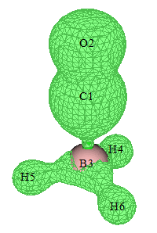
Clearly, O contributes most to OED, followed by C and then B. By default, Becke partition of atomic spaces is adopted, you can also change to other atomic partition methods via option -1.
It is worth to note that one can also plot OED contributed by specific orbitals. For example, we want to plot the OED only contributed by natural orbitals from 10 to 13. After inputting odd in subfunction 26 of main function 6, we then need to clean the occupation numbers of all other orbitals, namely in subfunction 26 we then also need to input
Multiwfn session
- 1-9 — Select orbitals 1 to 9
- 0 — Set occupation number to 0
- 14-57 — Select orbitals 14 to 57
- 0 — Set occupation number to 0 After that you can return to main menu and plot electron density as usual.
Calculation of OED for an open-shell system: C4H8 biradical In order to illustrate the value of OED in representing distribution of unpaired electrons of biradicals, next we will plot OED for a typical biradical system C4H8 at unrestricted M06-2X level. In this case, unrestricted open-shell calculation is needed and guess=mix keyword should be used to achieve symmetry-broken state. In addition, pop=no out=wfn must be specified so that spatial natural orbitals will be generated by mixing alpha and beta density matrices and subsequent diagonalization, then will be exported to .wfn file. The natural orbitals obtained by such an unrestricted DFT calculation are sometimes referred to as unrestricted natural orbitals (UNO). The Gaussian input file for producing the .wfn file is examples\C4H8-UNO.gjf, and the resulting .wfn file is examples\C4H8-UNO.wfn. Please use this file to plot OED like the example above, the isosurface map with isovalue of 0.02 a.u. should look like as follows. It is seen that its distribution character is quite similar to spin density, though the alpha and beta spins cannot be distinguished by sign.
CASSCF method is very commonly adopted for calculating biradical systems. OED can also be plotted for CASSCF wavefunction, you just need to generate a wavefunction file containing natural orbitals produced by CASSCF calculation.
OED can also be used to represent distribution of unpaired electrons of excited states calculated by TDDFT method, see my blog article "Using Multiwfn to calculate odd electron density to study distribution of unpaired electrons of excited states" (http://sobereva.com/583, in Chinese) for detailed illustration and discussion. It is worth to note that spin density is not available for TDDFT excited state wavefunction, so the OED is the only way to characterize the unpaired electron
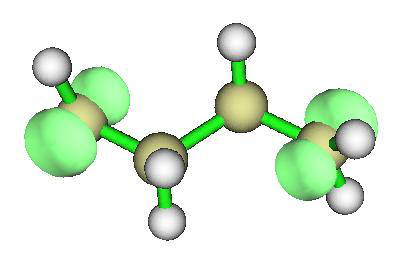
distribution.
4.A.7 Visually revealing electron correlation in different regions¶
Electron correlation effect is universal in chemical systems, and can be divided into dynamic and static (nondynamic) parts. In this section, two methods aimed at visually revealing electron correlation effect in different local regions are introduced. The fractional occupation number weighted electron density (FOD) described in Section 4.A.7.1 is more popular and focuses on revealing static correlation, while the local electron correlation functions described in Section 4.A.7.2 are able to separately reveal dynamic and nondynamic components of the electron correlation. So, both of the two methods are useful.
Both the two methods require a wavefunction file containing orbitals with partial occupancy as input. In other words, if all orbitals are either fully occupied or unoccupied, then these functions will vanish everywhere and electron correlation cannot be revealed. FOD was defined based on DFT, and the partially occupied orbitals should be obtained via finite-temperature DFT calculation (supported by ORCA, CP2K and so on). In contrast, the local electron correlation functions are defined based on wavefunction theory, and the partially occupied orbitals should be the natural orbitals obtained via multiconfigurational methods such as CCSD and CASSCF. Because computational cost of finite-temperature DFT is essentially identical to common DFT and significantly lower than any multiconfigurational method, FOD is the preferential choice if you are only interested in static electron correlation.
Both FOD and local electron correlation functions can be integrated over the whole space to obtain the value for quantifying strength of corresponding type of electron correlation of the whole system.
4.A.7.1 Fractional Occupation Number Weighted Electron Density (FOD)
Theory FOD was defined by Grimme first in Angew. Chem. Int. Ed., 54, 1 (2015) and further discussed in Chem. Eur. J., 23, 6150 (2017). FOD is expressed as
where i loops over all spin molecular orbitals, whose occupancy range is [0,1]. The orbitals are obtained by DFT calculation with a specific electronic temperature. With a proper temperature setting, the resulting frontier orbitals will be evidently partially occupied. For orbitals lower than
Fermi level, δ1=δ2=1, while for other orbitals, δ1=0 and δ2=-1. So, FOD is equivalent to a measure of the degree to which the electron density at each position deviates from 0 K (integer occupancy) at a finite temperature. The larger the FOD at a position, the stronger the static correlation in the corresponding region. Integral of FOD over the whole space is referred to as \(N_{\mathrm{FOD}}\), which quantifies overall static correlation of the whole system like the well-known T1 diagnostic value. Because the T1 diagnostic is dependent on the expensive CCSD calculation, NFOD is highly recommended for measuring static correlation of medium to large systems.
Note that FOD corresponds to the 90th user-defined function.
Examples As an example, we perform FOD analysis for HNO2. ORCA 6.0.1 program is used to carry out
finite-temperature B3LYP calculation for this molecule at 9000 K. Note that the suitable electronic temperature for FOD analysis is T=20000*\(T=20000*a_x+5000\)+5000, where ax is the Hartree-Fock composition in the employed DFT functional. Because ax of B3LYP is 0.2, the temperature used in this example is 9000 K. The ORCA input file is examples\HNO2_FOD.inp. After executing it by ORCA, you will have HNO2_FOD.gbw, then use orca_2mkl HNO2_FOD -molden command to convert it to HNO2_FOD.molden.input, which has been provided in “examples” folder.
First, we plot FOD isosurface map. Set “iuserfunc” in settings.ini to 90, then boot up Multiwfn and load examples\HNO2_FOD.molden.input, then input
Multiwfn session
- 5 — Calculate grid data
- 100 — User-defined function, which corresponds to FOD now
- 2 — Medium-quality grid Now from screen you can see the following information, showing that integral of FOD over the whole space using uniform grids is 0.139, which is just the \(N_{FOD}\) index. NFOD of HNO2 is not large (see Chem. Eur. J., 23, 6150 (2017) for rich examples), indicating that HNO2 does not show noticeable static correlation.
Summing up all value and multiply differential element:
0.139077305675630
Then choose option -1 to visualize isosurface map and set isovalue to 0.005 a.u., you will see the following map. It shows that the static correlation mainly comes from the region above and below the nitrogen, and the circular region surrounding O2.
Due to the very flexible design of Multiwfn, contributions to \(N_{FOD}\) from basis functions, shells, angular moments, atoms, fragments can also be derived. Next, I illustrate how to use Mulliken population analysis to realize this purpose (many other population methods such as Löwdin and Hirshfeld are also feasible). In the main menu of Multiwfn, we directly input fod to transform orbital occupancies according to the FOD formula, then from screen you can find NFOD is 0.139077, which corresponds to the sum of the current (transformed) orbital occupation numbers. From now on, studying electron density via usual steps will be equivalent to studying FOD.
Multiwfn session
- Next, we input 7 — Population analysis
- 5 — Mulliken analysis
- 1 — Output Mulliken population and atomic charges on screen Now you can see the following information, the population just corresponds to atomic contribution to \(N_{FOD}\). “Net charge” is meaningless in this situation. It is seen that static correlation in this system mostly comes from N1 and O2, then O3, which is fully in line with the isosurface map
Atom 1(N ) Population: 0.05877131 Net charge: 6.94122869
Atom 2(O ) Population: 0.05320397 Net charge: 7.94679603
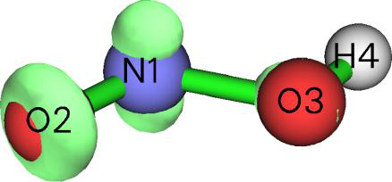
Atom 3(O ) Population: 0.02487142 Net charge: 7.97512858
Atom 4(H ) Population: 0.00223030 Net charge: 0.99776970
Since the Mulliken population analysis decomposes electron population in a very detailed manner, you can also find more information about nature of \(N_{FOD}\). For example, the following information on screen shows that static correlation is almost exclusively generated by p electrons.
Population of each type of angular moment orbitals:
Atom 1(N ) s: 0.0104 p: 0.0477 d: 0.0007 f: 0.0000 g: 0.0000 h: 0.0000
Atom 2(O ) s:-0.0003 p: 0.0535 d: 0.0001 f: 0.0000 g: 0.0000 h: 0.0000
Atom 3(O ) s:-0.0013 p: 0.0261 d: 0.0001 f: 0.0000 g: 0.0000 h: 0.0000
Atom 4(H ) s: 0.0020 p: 0.0002 d: 0.0000 f: 0.0000 g: 0.0000 h: 0.0000
Sum s: 0.0107 p: 0.1275 d: 0.0008 f: 0.0000 g: 0.0000 h: 0.0000
4.A.7.2 Local electron correlation functions
Theory The local total, dynamic and non-dynamic electron correlation functions proposed in J. Chem. Theory Comput., 13, 2705 (2017) are real space functions respectively aiming at revealing total, dynamic and non-dynamic electron correlation in various regions. They correspond to user-defined functions 87, 88 and 89, respectively, and defined as follows:
-
Local total electron correlation function: $\(I_{T}(\mathbf{r})=\frac{1}{4}\sum_{i}\sqrt{\eta_{i}(1-\eta_{i})}\,|\varphi_{i}(\mathbf{r})|^{2}\)$, \(i\) denotes index of natural spin orbital, η is corresponding occupation number. Note that in some cases, η may be marginally larger than 1.0 or negative, Multiwfn automatically sets it to 1.0 and 0.0 respectively to make the calculation feasible.
-
Local dynamic electron correlation function: $\(I_{D}(\mathbf{r})=\frac{1}{4}\sum_{i}\left[\sqrt{\eta_{i}(1-\eta_{i})}-2\eta_{i}(1-\eta_{i})\right]|\varphi_{i}(\mathbf{r})|^{2}\)$
-
Local nondynamic electron correlation function: $\(I_{ND}(\mathbf{r})=\frac{1}{2}\sum_{i}\eta_{i}(1-\eta_{i})\,|\varphi_{i}(\mathbf{r})|^{2}\)$
It is clear that \(I_{\mathrm{T}}(\mathbf{r}) = \frac{1}{4} \sum_{i} \sqrt{\eta_i} (1 - \eta_i) \left| \phi_i(\mathbf{r}) \right|^2\)(r) = ID(r) + IND(r). It is noteworthy that the form of these functions is closely related to the OED introduced in Section 4.A.6.
Integral of the local total, dynamic and nondynamic electron correlation functions respectively correspond to the total, dynamic and nondynamic correlation indices proposed in Phys. Chem. Chem. Phys., 18, 24015 (2016).
Examples As an example, let us plot \(I_{\mathrm{T}}(\mathbf{r}) = \frac{1}{4} \sum_{i} \sqrt{\eta_i} (1 - \eta_i) \left| \phi_i(\mathbf{r}) \right|^2\) for OC-BH3. Set "iuserfunc" in settings.ini to 87, then boot up Multiwfn and input
examples\COBH3_CCSD.wfn //Wavefunction file containing CCSD/def2-SVP natural orbitals
Multiwfn session
- 5 — Grid data calculation
- 100 — User-defined function, currently corresponding to \(I_{\mathrm{T}}(\mathbf{r}) = \frac{1}{4} \sum_{i} \sqrt{\eta_i} (1 - \eta_i) \left| \phi_i(\mathbf{r}) \right|^2\)
- 2 — Medium-quality grid
- -1 — Visualize isosurface Set isovalue to 0.013, then you will see
This graph is rather similar to the isosurface map of OED in Section 4.A.6. Since \(I_{T}\) is a real space function specific for revealing electron correlation, our observation implies that OED is also capable of visually exhibiting electron correlation.
Via the similar way, you can also easily plot ID and IND functions, you just need to set "iuserfunc" in settings.ini to 88 and 89 before booting up Multiwfn, respectively, and then repeat the aforementioned operations.
Note that it is possible to plot specific orbital contributions to local electron correlation functions, you can screen uninteresting natural orbitals by setting their occupation numbers to zero via suboption 26 of main function 6.
Using subfunction 4 of main function 100, you can integrate local electron correlation functions over the whole space, the result indicates the magnitude of electron correlation of the whole system. For example, we return to main menu and input
Multiwfn session
- 100 — Other function (Part 1)
- 4 — Integrate a real space function over the whole space
- 100 — User-defined function, currently corresponding to \(I_{T}\) The result, which is referred to as total correlation index, is 1.576. Repeat this calculation for dynamic and nondynamic electron correlation functions, you will find the resulting indices are 1.267 and 0.309, respectively. Evidently, the dynamic correlation governs the total correlation effect for the OC-BH3 system.
Conveniently calculate all electron correlation indices at once The total, dynamic and nondynamic correlation indices can also be calculated by subfunction 15 of main function 200, which is significantly faster and more convenient. Still taking the COBH3_CCSD.wfn as example, we enter main function 200 and then choose subfunction 15, you will immediately see the following output, the result is exactly the same as the ones we manually obtained earlier
Nondynamic correlation index: 0.30880061
Dynamic correlation index: 1.26746042
Total correlation index: 1.57626103
4.A.8 Analyze wavefunction higher than CCSD level¶
Note: Chinese version of this section is my blog article “The way of analyzing wavefunction higher than CCSD level in Multiwfn” (http://sobereva.com/395).
In the most commonly used program Gaussian, the highest level of wavefunction is CCSD. Although CCSD wavefunction is absolutely sufficient for almost all cases, due to some special
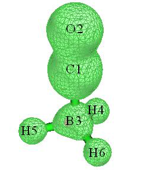
reasons, one may want to study wavefunctions produced at a higher level. Below I describe how to make Multiwfn able to analyze the following wavefunctions:
-
Wavefunction generated by AUTOCI module of ORCA (CCSD(T), CCSDT, CISDT, MP5, etc.)
-
CCSD(T) wavefunction generated by PSI4 program (http://www.psicode.org)
- Arbitrary order of coupled-cluster and CI wavefunction (including Full CI) yielded by MRCC program (http://www.mrcc.hu).
(1) ORCA Here I illustrate how to make Multiwfn able to analyze (relaxed) CCSD(T) wavefunction produced by ORCA. The version of ORCA that I currently use is 6.1. Below is an example input file named H2CO.inp, which calculates H2CO at CCSD(T)/cc-pVTZ level using AUTOCI module.
! autoci-CCSD(T) cc-pVTZ verytightSCF
%maxcore 5000
%pal nprocs 96 end
%autoci density relaxed end
* xyz 0 1
C 0.00000000 0.00000000 -0.52887900
H 0.00000000 0.93777000 -1.12367000
O 0.00000000 0.00000000 0.67757700
H 0.00000000 -0.93777000 -1.12367000
*
Run this input file, you will have a lot of files in current folder, including H2CO.gbw, H2CO.densities, and so on, but only these two are necessary for the following steps.
We first convert .gbw to .molden file by running orca_2mkl H2CO -molden, then you will have H2CO.molden.input in current folder.
Then, we need to export the 1st density matrix (1RDM) in AO basis of CCSD(T) level from the binary .gbw and .densities files to a plain text .json file. To this aim, we create a text file named orca.json.conf in current folder with the following content. This file will ask orca_2json to export 1RDM generated by AUTOCI module to json file.
{
"Densities": ["autocipre"]
}
Now we run orca_2json H2CO.gbw, then you will have H2CO.json in current folder.
Boot up Multiwfn and input H2CO.molden.input
Multiwfn session
- Input actual path 1000 — Main function 1000 (a hidden function)
- 98 — Generate natural orbitals based on density matrix outputted by ORCA program H2CO.json
Label of the 1RDM to be loaded in the json file After that, Multiwfn loads 1RDM and generates natural orbitals (NOs) by diagonalizing it, and you can see occupation numbers of various NOs on screen. Next, we input y, Multiwfn will export the NOs to new.mwfn and load it. Now, the wavefunction in memory is CCSD(T) wavefunction represented in terms of NOs, you can perform various wavefunction analyses as usual, and you can
use main function 0 to visualize the NOs.
Below, I will mention some details and related information:
- If reference wavefunction is unrestricted, you need to ask orca_2json to also export 1RDM of spin density to json file, that is, you should replace
"Densities": ["autocipre"]
with
"Densities": ["autocipre","autocirre"]
Then, after choosing option 98 in main function 1000 and inputting autocipre, Multiwfn will ask you how to generate NOs. If you choose to generate “alpha and beta natural orbitals” or “Spin natural orbitals”, Multiwfn will also ask you to input label of the 1RDM of spin density in the json file, you should input autocirre.
-
Via exactly the same manner as shown above, you can also make Multiwfn analyze other relaxed wavefunctions generated by the AUTOCI module. For example, you hope to perform wavefunction analyses at CCSDT level, you just need to replace autoci-CCSD(T) in the ORCA input file with autoci-CCSDT. See AUTOCI section of ORCA manual to see the list showing all levels available in AUTOCI.
-
As long as you properly specify the label of 1RDM in orca.json.conf and in Multiwfn, Multiwfn can also analyze wavefunction of any other levels. For example, 1RDMs of total and spin density of SCF level have label of “scfp” and “scfr”, respectively; those generated by MDCI module have label of “mdcip” and “mdcir”, respectively. You can run orca_plot H2CO.gbw -i and then choose option “Enter type of plot” to check which densities are available in this file, the labels of various densities are also explicitly shown on screen.
It is also noted that if you write
"Densities": ["all"]
in orca.json.conf, then orca_2json will export all available 1RDMs to .json file (you will see the full list of the exported 1RDMs on screen), and then you can choose to load anyone in Multiwfn by inputting the corresponding label; in addition, if AUTOCI module is used in the calculation, in this case 2RDM will also be exported to the .json file, making the file size large.
(2) PSI4 The version of PSI4 I currently use is 1.3.2. Below is an example of input file, which calculates hydrogen fluoride at CCSD(T)/cc-pVTZ level, and produces HF_CCSDpT.fchk in current folder.
molecule HF {
H 0.0 0.0 -0.831975
F 0.0 0.0 0.092442
}
set basis cc-pVTZ
grad, wfn = gradient('CCSD(T)', return_wfn=True)
fchk_writer = psi4.FCHKWriter(wfn)
fchk_writer.write('HF_CCSDpT.fchk')
If the version of PSI4 you are using is≥ 1.4, the last two lines of the example above should be replaced with fchk(wfn,'HF_CCSDpT.fchk').
The resulting HF_CCSDpT.fchk records Hartree-Fock MOs and CCSD(T) density matrix. If
you directly feed this file into Multiwfn, because Multiwfn never utilizes density matrix but only load orbitals from the file, the result of following analyses will correspond to Hartree-Fock level. In order to make Multiwfn analyze CCSD(T) wavefunction, you should do below steps:
-
Boot up Multiwfn and load HF_CCSDpT.fchk as usual 2. Enter main function 200 and select subfunction 16. This function is used to transform density matrix in the .fch/.fchk file into natural orbitals, see Section 3.200.16 for more detail.
-
Input CCSD, then “Total CCSD Density” field in the .fchk file will be loaded, and you will immediately see occupation numbers of natural orbitals (NOs) yielded by diagonalization of CCSD(T) density matrix.
-
Input y. Then new.mwfn is generated in current folder, which records NOs at CCSD(T) level. This file is automatically loaded into Multiwfn, therefore the orbitals in memory now correspond to NOs of CCSD(T) wavefunction, and thus all following analyses will correspond to CCSD(T) wavefunction.
Note that if this is an open-shell system, you can choose the type of NOs that to be generated, including spatial NOs, alpha/beta NOs and spin NOs. See Section 3.200.16 for more details.
(3) MRCC The version of MRCC I currently use is Sep 25, 2017. Below is an example of input file, which calculate hydrogen fluoride at CCSDT/cc-pVTZ level.
basis=cc-pvtz
calc=CCSDT
mem=2500MB
dens=1
geom=xyz
2
H 0.0 0.0 -0.831975
F 0.0 0.0 0.092442
After running it by MRCC, you will find a file named MOLDEN in current folder, which is a Molden input file and records Hartree-Fock MOs. In current folder you can also find a file named CCDENSITIES, which records the 2nd and 1st reduced density matrix (2RDM and 1RDM). In order to make Multiwfn analyze CCSDT wavefunction, we must convert the 1RDM into natural orbitals and save them to .molden file.
Boot up Multiwfn and load the MOLDEN file, enter main function 1000 and select subfunction 97, input path of the CCDENSITIES file. Then input the number of frozen core orbitals. By default, MRCC freezes core MOs in electron correlation calculation. Current system has two core electrons (in the output file it can be seen that " Number of core electrons: 2"), and this is a closed-shell system, each occupied MO has two electrons, therefore only one core MO is frozen, so we input 1. After generation of natural orbitals by diagonalizing CCSDT density matrix is finished, occupation numbers are printed on screen, and a file named MOLDEN.mwfn is automatically exported to current folder, which carries natural orbitals of the CCSDT wavefunction. Then if you input y, Multiwfn will load the MOLDEN.mwfn, and then you can perform various wavefunction analyses for the CCSDT wavefunction.
The procedure of analyzing CI wavefunction produced by MRCC is exactly the same as those shown above. Below is an example input file of calculating elongated LiH at FCI/aug-cc-pVDZ level without frozen core treatment.
basis=aug-cc-pvdz
calc=fci
mem=2500MB
dens=1
core=0
geom=xyz
2
H 0.0 0.0 0.0
Li 0.0 0.0 3.0
4.A.9 Calculate TrEsp (transition charge from electrostatic potential) charges and analyze exciton coupling¶
1. Theories about TrEsp General form of electrostatic potential (ESP) of a molecule, say A, can be written as
where ZI and RI are nuclear charge and coordinate of atom I, respectively. δ is Kronecker function. \(\rho_{a,a}\) is transition density between state a and a'.
The ESP we commonly studied is ESP of a single state, i.e. a=a'. When a and a' correspond to different states, the potential may be referred to as "transition electrostatic potential", which measures ESP exerted by excitation corresponding to a-a' transition.
It is known that exact ESP of a single state can often be well approximately represented as the potential evaluated based ESP fitting charges (e.g. CHELPG and MK charges, see Sections 3.9.10 and 3.9.11),
where 𝑞𝑎𝐼 is ESP fitting charge of atom I at electronic state a.
In light of this, J. Phys. Chem. B, 110, 17268 (2006) puts forward the concept of TrEsp (transition charge from electrostatic potential), and shows that exact transition ESP can be well approximated as below
where 𝑞𝑎𝑎′𝐼 is TrEsp of atom I derived from transition density of a-a'. The way of calculation of TrEsp charges is almost exact the same as evaluation of common
ESP fitting charges, the only differences are that the nuclear contribution should be ignored, and density of a single state should be replaced with transition density between two states.
- Example of calculating TrEsp charges Now I use a simple molecule 4-nitroaniline to illustrate how to calculate TrEsp charges for its S0-S2 transition. Here I assume you are a Gaussian user (If you prefer to use ORCA program, the steps will be slightly lengthy, but can be significantly simplified via writing a shell script. Please check #2 of this post for detail: http://sobereva.com/wfnbbs/viewtopic.php?pid=389).
First, run the Gaussian input file examples\4-Nitroaniline_TrESP.gjf, the keywords PBE1PBE/6-31g(d) TD density=transition=2 out=wfn mean transition density between ground state (S0) to S2 will be generated at TD-PBE0/6-31G(d) level, and then it will be automatically diagonalized to yield corresponding natural orbitals, which are finally saved to specified .wfn file. If you are confused or do not have Gaussian in hand, you can directly download related files from http://sobereva.com/multiwfn/extrafiles/TrEsp.zip
Multiwfn session
- Boot up Multiwfn and input S0S2.wfn — The .wfn file generated in above process. Can be found in the TrEsp.zip
- 7 — Population analysis
- 12 — CHELPG fitting method (you can also use MK or RESP method instead)
- 5 — Choose form of ESP
- 3 — Transition electronic (i.e. the ESP specific for evaluating TrEsp)
- 1 — Start calculation Calculation of ESP for even medium-sized systems is time-consuming, you need to wait patiently. Finally, the TrEsp charges are shown on the screen:
Center Charge
1(C ) 0.2134106035
2(C ) -0.1679471876
3(C ) 0.1841565861
[...ignored]
16(O ) -0.0948987209
Sum of charges: -0.0000000000
RMSE: 0.000970 RRMSE: 0.044908
The sum of charges is exactly zero, which is what we expected, because electronic transition process does not alter total number of electrons. Then if you want to export X, Y, Z coordinate and TrESP of atoms to .chg file (see Section 2.5 on description of this format), you can input y.
Beware that, the TrEsp charges obtained in this way must then be manually divided by √2! This is because the natural orbitals in the exported .wfn file were generated based on symmetrized form of transition density matrix (TDM), however the symmetrization was done via a strange way
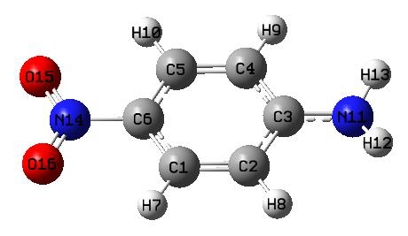
by Gaussian, namely TDMi,j=(TDMi,j+TDMj,i)/ \(\sqrt{2}\) rather than TDM\(\mathrm{TDM}_{i,j}=(\mathrm{TDM}_{i,j}+\mathrm{TDM}_{j,i})/\sqrt{2}\) as expected, therefore this problem should be manually fixed via dividing the resulting charges by \(\sqrt{2}\)
In fact, in Multiwfn the transition charge can also be calculated by Mulliken method via hole-electron analysis module, see Section 3.21.1.3, and the computational cost is almost negligible. However, Mulliken transition charges must not be as good as TrEsp charges for approximately representing transition electrostatic potential and analyzing intermolecular exciton coupling purposes.
Skill 1: Accelerating calculation of TrEsp by making use of cubegen utility If number of your CPU cores is limited (less than 10 cores), making use of cubegen utility in Gaussian package may notably decrease cost of ESP relevant analyses, please read Section 5.7 for detail. The cubegen can also be used to reduce computational cost of TrEsp charges, the procedure is described below.
Since cubegen calculates ESP based on density matrix information in .fch/fchk file, we must first generate TDM and store it into a .fch file, the function mentioned in Section 3.21.9 can do this. We first use PBE1PBE/6-31g(d) TD IOp(9/40=4) keywords in Gaussian to carry out electron excitation calculation and meantime keep the .fch file, the corresponding files for 4-Nitroaniline are 4-Nitroaniline_IOp.gjf, 4-Nitroaniline_IOp.out and 4-Nitroaniline.fchk in the aforementioned TrEsp.zip package.
Boot up Multiwfn and input 4-Nitroaniline.fchk
Multiwfn session
- 18 — Electron excitation analysis
- 9 — Generate and export TDM
- 1 — Generate TDM between ground state and excited state 4-Nitroaniline_IOp.out
- 2 — Generate TDM between S0 and S2 y
Export TDM.fch, whose density matrix field corresponds to the just generated TDM Please make sure that "cubegenpath" parameter in settings.ini has been set to actual path of cubegen utility in Gaussian folder, then reboot Multiwfn and input
Multiwfn session
- TDM.fch 7 — Population analysis
- 12 — CHELPG fitting method
- 5 — Choose form of ESP
- 3 — The ESP type specific for evaluating TrEsp
- 1 — Start calculation Immediately the TrESP charges are shown on screen. You do not need to manually divide the
resulting charges by \(\sqrt{2}\), because the TDM generated by Multiwfn has already been symmetrized in a correct way.
It is worth to note that if you want to verify whether the fitted TrEsp charges are reasonable, you can compare the electric dipole moment computed via these charges and the transition electric dipole moment printed by Gaussian (or other quantum chemistry codes). As it is well known that ESP fitting charges are able to well reproduce electric dipole moment, commonly the TrEsp charges are also able to well reproduce actual electric transition dipole moment.
After calculation of TrEsp charges, we choose y to let Multiwfn export the charges to TDM.chg file in current folder. Then boot up and load this file, you will find the following information on screen
Component of electric dipole moment:
X= -0.011607 a.u. ( -0.029501 Debye )
Y= -1.781254 a.u. ( -4.527495 Debye )
Z= 0.000011 a.u. ( 0.000029 Debye )
In 4-Nitroaniline_IOp.out you can find the following information
Ground to excited state transition electric dipole moments (Au):
state X Y Z Dip. S. Osc.
1 -0.0000 -0.0000 0.0001 0.0000 0.0000
2 -0.0165 -1.7911 0.0000 3.2083 0.3408
3 0.0210 0.0188 0.0000 0.0008 0.0001
Since the electric dipole moment evaluated based on our TrEsp charges is very close to the exact transition electric dipole moment, it is clear that our TrEsp charges must be reasonable.
Skill 2: Imposing customized charge constraint during TrEsp fitting process The restrained electrostatic potential (RESP) module of Multiwfn has been detailedly introduced in Section 3.9.16. As you can see, this module is more general and more powerful than the MK or CHELPG module, because you can arbitrarily impose customized constraints on the resulting ESP fitting charges, for example, you can request some atoms must have exactly the same charge, or request sum of a batch of charges must equal to a predefined value.
Here, I present an example to illustrate how to use the RESP module to calculate TrEsp based on MK fitting grid with additional constraint that atomic charge of all hydrogens must be zero.
Firstly, write a plain text file (e.g. chgcons.txt) with the following content:
7 0
8 0
9 0
10 0
This file will be used in the RESP module. The 7~10 are atom indices of the hydrogens, the 0 means their charges will be constraint to zero during fitting.
Multiwfn session
- Boot up Multiwfn and input S0S2.wfn — The .wfn file we previously used
- 7 — Population analysis
- 18 — RESP module
- 11 — Choose form of ESP
- 3 — Transition electronic
- 6 — Set charge constraint in one-stage fitting
- 1 — Load charge constraint setting from external plain text file chgcons.txt
- The file containing charge constraint 2 — Start one-stage ESP fitting calculation with customized constraint. The default fitting grid is MK (you can also change to CHELPG by option 3)
The result is
Center Charge
1(C ) 0.158613
...
7(H ) 0.000000
8(H ) -0.000000
9(H ) 0.000000
10(H ) -0.000000
11(N ) 0.178112
...
Clearly, our charge constraints have been in effect, and all other atoms still have reasonable TrEsp charges. You can learn more about the RESP module by reading corresponding example in Section 4.7.7. It is worth to note that when you select “Transition electric” in option 3, the default atom equivalence constraint is automatically removed and the restraint strength in one-stage fitting is automatically set to zero, since these treatments are not useful in current case.
- Evaluating exciton coupling energy based on TrEsp General form of intermolecular Coulomb interaction energy can be expressed as
This quantity may have different physical meanings. For example, 𝑉00,00 \(V_{00,00}^{A,B}\): Coulomb interaction energy between A and B in their ground states 𝑉00,11 𝐴,𝐵: Coulomb interaction energy between A in ground state and B in the first excited state 𝑉01,10 𝐴,𝐵= 𝑉10,01 𝐴,𝐵: Excitation energy transfer couplings between transition of the two molecules
Calculation of the integrals in 𝑉𝑎𝑎′,𝑏𝑏′ \(V_{00,00}^{A,B}\) is difficult, there is a method known as transition density
cube (TDC), which calculates the integrals by numerical integration based on evenly distributed grids, its cost is extremely high for large system. Fortunately, it was shown that by using TrEsp
charges calculated for two molecules, their exciton coupling energy 𝑉𝑎𝑎′,𝑏𝑏′ \(V_{00,00}^{A,B}\) can be readily
evaluated using below formula at commonly satisfactory accuracy:
In Multiwfn, you can easily calculate exciton coupling energy based on TrEsp charges of two molecules. The steps are briefly outlined below:
(1) Optimize dimer structure (2) Extract coordinate of each monomer and write it into Gaussian input file, properly change keywords and perform electron excitation calculation to yield .wfn file containing natural orbitals derived from transition density. Note that nosymm keyword must be used to avoid Gaussian automatically translating and rotating the overall monomer coordinate.
(3) Generate TrEsp charges for each monomer using respective .wfn file generated at last step, then export TrEsp charges as .chg file.
(4) Manually combine content of the two monomer .chg files as a single .chg file. The monomer
coordinate in this file should be consistent with optimized dimer coordinate.
(5) Load the dimer .chg file into Multiwfn, enter main function 7 and select option -2, then input atom list of the two monomers in turn, the exciton coupling energy will be printed immediately.
4.A.10 Intuitively exhibiting atomic properties by coloring atoms¶
There is a very useful way of intuitively exhibiting atomic properties calculated by Multiwfn, namely coloring atoms in VMD program (http://www.ks.uiuc.edu/Research/vmd/), here I illustrate how to do that via two examples. More detailed discussions and examples can be found in my blog article "Using Multiwfn+VMD to exhibit atomic charges, spin populations, charge transfer and condensed Fukui function via coloring atoms" (http://sobereva.com/425).
(1) Coloring atoms according to atomic charges First, I illustrate how to use this manner to vividly represent atomic charges of polyyne. This system was also involved in Section 4.13.6.
The first step is calculating atomic charges. Boot up Multiwfn and input below commands: examples\polyyne.wfn
Multiwfn session
- 7 — Population analysis
- 11 — ADCH charge (this type of charge is generally recommended) 1 y
Multiwfn session
- Other functions (Part 1) 2 — Export new file
- 1 — The format of the new file is .pqr polyyne.pqr Now we have polyyne.pqr in current folder. The .pqr format is very similar to the popular .pdb format, the major difference is that in the .pqr format the last two columns are specific for recording atomic charges and atomic radii, respectively. In current file, the atomic charges correspond to the polyyne ADCH charges, while the atomic radii correspond to Bondi van der Waals radii.
The .pqr file can be recognized by VMD. We boot up VMD, then drag the polyyne.pqr into VMD main window to load it. After that, we modify plotting settings:
(a) Use white background: Inputting color Display Background white in VMD console window (b) Modifying drawing style and coloring setting: Enter "Graphics" - "Representation", set the drawing method as "CPK", set the coloring method as "Charge". Then choose "Trajectory" tab, input -0.4 and 0.4 in the "Color Scale Data Range" text boxes and press ENTER button.
(c) Changing color transition style: Enter "Graphics" - "Colors", choose "Color Scale" tab, change the default RWB to BWR (Blue-White-Red)
(e) Choose "Display" - "Orthographic" to use orthographic perspective. Now you will see the graph below in VMD OpenGL window. The atoms at both ends are hydrogen, all the other atoms are carbon.
In the graph above, the red and blue colors reflect that the atom has positive and negative charge, respectively. The deeper red (blue) the more positive (negative) the charge. As can be seen, since carbon has larger electronegativity than hydrogen, the two hydrogens have evident positive charge and the carbons bonded to them have evident negative charge. The white color indicates that the charge of the carbons in the middle region of the molecule is close to zero.
The polyyne is a highly conjugated system, it is expected that external field could significantly polarize its charge distribution. To study this problem, we use the same procedure to plot the map based on examples\polyyne_field.wfn, which was generated under 0.03 a.u. external electric field along molecular axis. The resulting graph is shown below, the direction of the external electric field is from the right side to the left side.
It can be seen that the atomic charge distribution is no longer symmetric. Since the source of the field is at right side, large amounts of electrons transferred from left to right, as a result, the net charge of the carbon atoms at left side become positive, while the ones at right side become negative.
(2) Coloring atoms according to atomic contribution to molecular orbitals The atomic coloring method is not only able to be employed to exhibit atomic charges, but can also be used to exhibit other atomic properties. As an example, I illustrate how to represent atomic contributions to molecular orbitals by coloring atoms, examples\N-phenylpyrrole.fch is taken as example molecule.
First, we calculate orbital composition of an orbital. Boot up Multiwfn and input examples\N-phenylpyrrole.fch
Multiwfn session
- 8 — Orbital composition
- 3 — SCPA method
- 36 — Select MO 36 as example Then we copy all atomic contributions from the Multiwfn window to a text file using the method described in Section
Multiwfn session
- 0 — Return -10
- Return to main menu 100 — Other functions (Part 1)
- 2 — Export new file
- 2 — The format of the new file is xyz, because .xyz is very similar to .chg N-phenylpyrrole.chg
C -0.00000000 1.12162908 1.82507914 0.396870
C -0.00000000 0.71310006 3.13457424 0.099898
C -0.00000000 -0.71310006 3.13457424 0.099898
...[ignored]
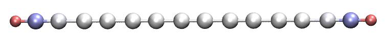
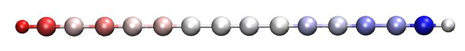
H 0.00000000 2.14896316 -3.05414223 0.000000
H 0.00000000 -0.00000000 -4.31975533 0.000000
We use Multiwfn to load this .chg file and convert it to N-phenylpyrrole.pqr, then use VMD to visualize it using exactly the same procedure described in last example. However, this time the lower and upper limit of color scale should be set to -50 and 50, respectively. The resulting graph is shown as left part of the map below; as a comparison, the corresponding isosurface map of MO36 is shown at right part.
The redder the atom, the greater its contribution to the orbital. As can be seen, the atomic coloring introduced in this section well reflects actual orbital distribution. For very large molecules, the isosurface map may become quite complicated, while the atomic coloring map should be much clearer.
Of course, the atomic coloring method is also applicable to other kinds of atomic properties calculated by Multiwfn, such as condensed Fukui function, atomic spin population, atomic transition charge, source function of atoms, integral of electron energy in atomic space, variation of atomic charge during electronic transition or intermolecular interaction. More examples can be found in my blog article http://sobereva.com/425 (in Chinese).
4.A.11 Overview of methods for studying chemical bonds¶
Note: Chinese version of this Section is my blog article “An overview of chemical bond analysis methods supported by Multiwfn” (http://sobereva.com/471), which also contains extended discussion.
In this section, I present an overview of all methods that may be used to study chemical bonds. You will find Multiwfn is indispensably useful in characterizing and unraveling nature of the bonds. Most analyses can be applied to both ground state and excited states (see Section 4.18.13 for more information about this point)
1 AIM (Atoms-in-molecules) analysis In the framework of AIM, the bond critical point (BCP) is the most representative point of a
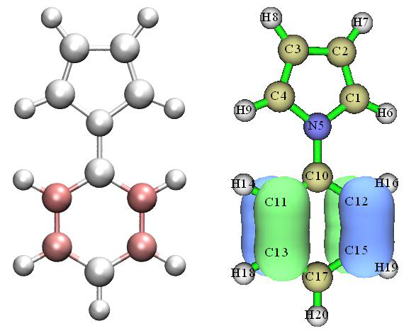
bond, hence character of chemical bonds can be characterized by various properties at corresponding BCPs, for example:
·Electron density and potential energy at BCP, namely ρ(BCP) and V(BCP), are often used to discuss bonding strength. For the same kind of bond, they are usually positively and negatively correlated to bonding strength, respectively.
·Laplacian of electron density at BCP, namely \(\nabla^2 \rho\)(BCP), is often used to judge whether or not a bond mainly shows covalent character. Negative and positive values imply that the major nature of the bond is covalent and non-covalent, respectively. But notice that this criterion is often
wrong (e.g. CO has positive \(\nabla^2 \rho\)(BCP) but it is evidently a polar covalent bond)
·In Angew. Chem. Int. Ed. Engl., 23, 627 (1984) it was argued that negative and positive values of energy density at BCP, i.e. H(BCP), implying the bond has covalent and non-covalent nature, respectively. But this criterion is not always true; for example, the Ca-O in CaO is typical ionic bond, but its H(BCP) is negative.
·The V(BCP)/G(BCP) was proposed in J. Chem. Phys., 117, 5529 (2002), where G(BCP) denotes Lagrangian kinetic energy density at BCP. It was argued that <0, >1 but <2, >2 of this quantity respectively imply that the bonding mainly belongs to close-shell interaction, intermediate (mixed) interaction and covalent interaction.
·The eta index was proposed in J. Phys. Chem. A, 114, 552 (2010) and further studied in
Angew. Chem. Int. Ed., 53, 2766 (2014), it is defined as |\(|\lambda_1(\mathbf{r})|/\lambda_3(\mathbf{r})\) are the smallest and largest eigenvalues of Hessian matrix of electron density, respectively. It was argued that if eta index at BCP is smaller than 1, then the bonding should be closed-shell interaction; while if it is larger than 1, the interaction should have covalent nature, and the more positive the value, the stronger the covalent character. However, I found this argument is not always true, for example this quantity of both Ni-C and C-O bonds in Ni(CO)4 is less than 1, but undoubtedly they should be attributed to polar covalent bonds.
·Bond degree (BD) was proposed in J. Chem. Phys., 117, 5529 (2002) and defined as
H(BCP)/ρ(BCP). The physical meaning of BD is energy density of unit electron at BCP. For covalent interaction (usually H(BCP)<0), the more negative the BD, the stronger the bonding; while for non-covalent interaction (usually H(BCP)>0), the more positive the BD, the weaker the interaction.
·Bond ellipticity was proposed in J. Am. Chem. Soc., 105, 5061 (1983) and defined as ε(r)=
[λ1(r)/λ2(r)]-1. At BCP the λ1 and λ2 must be negative and exhibit the curvature of electron density perpendicular to the bond. The larger the value deviates to 0, the stronger the tendency that the electron density has unsymmetric distribution in the plane perpendicular to the bond at the BCP.
·The source function with BCP as reference point has been employed to study chemical bonds, see Struct. & Bond., 147, 193 (2010) for comprehensive review and Section 4.17.5 for analysis example.
There are some other research papers utilizing BCP properties to discuss chemical bonds, for example J. Am. Chem. Soc., 120, 13429 (1998) and J. Comput. Chem., 39, 1697 (2018). It is worth to note that properties at certain critical points can also be used to estimate metallicity of crystals, see J. Am. Chem. Soc., 124, 14721 (2002), Chem. Phys. Lett., 471, 174 (2009) and J. Phys.: Condens. Matter, 14, 10251 (2002).
The bond path is also a very important concept in the AIM framework, it rigorously reveals the main interaction path connecting various atoms. It is important to understand the fact that a strong
chemical bond must be accompanied by a bond path and BCP, while present of bond path and BCP does not imply existence of a chemical bond.
AIM topology analysis has been systematically introduced in Section 3.14 and illustrated in Section 4.12.1, all above-mentioned quantities can be easily and rapidly evaluated by Multiwfn. It is noteworthy that in Multiwfn many real space functions at critical point (or specific point) can be decomposed as contributions from various orbitals (usually MOs or LMOs), see Section 4.2.4 for example; moreover, any real space function can be plotted along bond paths, see Section 4.2.3 for example. These useful features can often provide much deeper insight into the bonding.
The above-mentioned real space functions can also be plotted as curve map, plane map or isosurface map so that one can visually study their distribution, see Section 4.3, 4.4 and 4.5 for
practical example, respectively. The contour line map and isosurface map of ∇2ρ(r) is particularly useful and frequently employed.
2 Bond order and delocalization index analysis Bond order is a very useful and straightforward way of characterizing chemical bonds. Multiwfn supports a lot of bond order definitions, please check Section 3.11 for detailed introduction. Different bond orders have different characters and physical meanings. For example, Laplacian bond order (LBO) measures covalent component of a bond and usually has good relationship with bond dissociation energy (BDE), while Mayer bond order essentially reflects the number of electrons shared by two interacting atoms. The bond analysis module of Multiwfn is also able to do more things than just calculating the value of bond order. For example, Multiwfn can decompose some bond orders as contributions from various orbitals, the Wiberg bond order can be decomposed as contributions from atomic orbital pairs. Many detailed analysis examples of bond order are given in Section 4.8.
It is worth to mention that the delocalization index (DI) is essentially equivalent to Mayer bond order and fuzzy bond order in physical nature. The difference arises from how atomic spaces are defined. For nonpolar bonds, the DI is usually very close to Mayer and Fuzzy bond orders, but they quantitatively differ for polar bonds. For DI, the AIM atomic basins are employed as atomic spaces. The DI can be calculated via basin analysis module, see Section 3.18.5 for detailed introduction of DI and Section 4.17.1 for DI analysis example. Commonly I do not suggest employing DI, because its cost is by far higher than evaluation of Mayer and Fuzzy bond orders.
For the same kind of chemical bond, e.g. C-O bond in different transition metal coordinates, the Mayer bond order and LBO are positively correlated with bonding strength. For different kinds of chemical bonds, Mayer bond order should not be used to compare bonding strength, for example, the bond in N2 and that in P2 have evidently different BDEs, but they have basically the same Mayer bond order because both of them are typical triple bonds. In contrast, the LBO is able to faithfully reflect that the bond in P2 is much weaker than N2. Please check original paper of LBO (J. Phys. Chem. A, 117, 3100 (2013)) for more discussions, comparisons and examples.
Plotting variation of bond order versus reaction coordinate is an absolutely very good idea to shed light on the underlying change of electronic structure in a chemical reaction, see Section 4.A.1 on how to easily realize this.
3 Bond order density and natural adaptive orbital analysis The concept of bond order density (BOD) and natural adaptive orbital (NAdO) has been introduced in detail in Section 3.200.20, they are fairly useful if you want to graphically discuss bond order of a given covalent bond. The BOD is a real space function representing everywhere
contribution to bond order (strictly speaking, delocalization index in the present context), while NAdO unveils nature of bond order in terms of orbitals. See Section 4.200.20 for application examples, you will find this method particularly useful in many situations.
4 Orbital localization analysis Molecular orbitals (MOs) commonly are unable to be used to study bonding characters because they are highly delocalized and do not directly correspond to chemical bonds. Orbital localization is a very powerful technique, it can transform the MOs to localized molecular orbitals (LMOs), which are highly localized and have very close relationship with bonding. Via LMOs, numerous useful information about chemical bonds can be extracted, such as bond polarity, bond multiplicity, bond type, the atomic orbitals that participate in the bonding and so on. Please check Section 3.22 for detailed introduction of LMOs and follow the LMO analysis examples in Section 4.19.
5 AdNDP analysis The purpose of the adaptive natural density partitioning (AdNDP) method is somewhat similar to orbital localization method, the advantage of AdNDP is that it is also able to derive orbitals with semi-delocalization character from the complicated multi-electron wavefunction. If the AdNDP analysis has been properly performed, then the resulting orbitals will faithfully reveal all multi-center bonds in current systems. The drawback of AdNDP analysis is that user must manually pick out orbitals from candidate list, this process is slightly troublesome and requires the user has adequate chemical intuition. When there is no multi-center bond, using orbital localization is much preferred over AdNDP because it is fully automatic, fast and free of subjectivity; while if you suspect that present system may have evident multi-center bonds and you want to study them, commonly AdNDP is the only choice. The AdNDP method is detailedly introduced in Section 3.17, related examples are provided in Section 4.14.
6 Analysis of ELF and relevant real space functions ELF is a very important real space function, it is able to reveal localization and delocalization of electrons in chemical systems. Brief introduction of ELF can be found in Section 2.6. In Multiwfn ELF can be analyzed in many different ways, as shown below
·Visualizing study. In Multiwfn, the ELF can be drawn as curve map by main function 3, drawn as plane map by main function 4 and plotted as isosurface map via main function 5, see Sections 4.3, 4.4 and 4.5 for examples, respectively. From the graphs one can easily identify which region contains evident covalent interaction (i.e. evident share of electrons) and judge the nature of a given chemical bond. In addition, the bond multiplicity can be inferred from the shape of ELF
isosurface around the bond. Multiwfn is also capable of studying ELF-π and ELF-σ, so that π interaction and σ interaction can be studied separately, see Sections 4.5.3 and 4.100.22 for example.
Note that there are a lot of real functions having analogous distribution feature as ELF, though their underlying ideas may not be very similar to ELF. Multiwfn supports most of them and they can also be plotted in exactly the same way as ELF. These real space functions include LOL, SCI, SEDD, RoSE, PS-FID. The LOL is introduced in Section 2.6 and is sometimes preferred over ELF because of its clearer graphical effect; introduction of other real space functions can be found in Section 2.7.
The negative part between two atoms in \(\nabla^2\rho\) map is able to reveal the region where electrons concentrate due to formation of covalent bond, this point is similar to ELF. In J. Phys. Chem., 100,
15398 (1996), Bader believes that \(\nabla^2\rho\) and ELF are homeomorphic and their similarities and
differences are able to provide complementary information in understanding chemical bonds.
However, notice that for bonds involving very heavy atom, \(\nabla^2 \rho\) map often fails to reveal covalent character. For example, ∇2ρ in the interacting region of Re-Re bond is entirely positive.
By using Multiwfn and shell script as well as third-part software, anime of ELF or other functions during a chemical process (often represented as trajectory resulting from intrinsic reaction coordinate or rigid scan tasks) can be easily generated, such an anime is able to very vividly exhibit variation of characters of chemical bonds, see Section 4.A.1 on how to make the anime.
·Basin analysis of ELF (or similar functions): This kind of analysis can be carried out via basin analysis module (main function 17), see Section 4.17.2 for example. All ELF basins collectively make up the whole space, each ELF basin corresponds to a region with featured electronic structure. For example, the ELF basins may correspond to covalent bond, lone pair, core region, etc. By analyzing character of bond basins, one can acquire much information about the bonds, such as average number of electrons that occurs in the bonding region, degree of electron localization in the bonding region, dipole moment of the bonding region. Contribution of each atom to the electron population in the bonding region can also be obtained, as illustrated in Section 4.17.7.
·Topology analysis of ELF (or similar functions): This kind of analysis allows one to obtain accurate position of ELF maximum (also known as ELF attractor) and (3,-1) type of ELF critical point (also known as ELF bifurcation point), the former displays the most representative point of an ELF basin, while the value of the latter somewhat reflects the extent of electron sharing (degree of delocalization) between two ELF basins. Topology analysis of ELF can be realized via main function 2, see Section 4.2.2 for example. For practical studies based on topology analysis of ELF and LOL, see Nature, 371, 683 (1994) and J. Comput. Chem., 30, 1093 (2009). Tracing variation of ELF attractors is particularly useful for understanding the change in electronic structure and bonding character during a chemical process, illustrative examples of such analysis are RSC Adv., 5, 62248 (2015), Chem. Phys., 501, 128 (2018) and Comput. Theor. Chem., 1154, 17 (2019).
Note that basin analysis is also able to give positions of ELF attractors, the procedure is even simpler than using topology analysis module, however the accuracy of the positions given by basin analysis module is not as good as topology analysis module, since basin analysis is carried out based on even-distributed grids.
7 IRI analysis Compared to ELF/LOL, the unique advantage of the interaction region indicator (IRI) defined by Tian Lu is able to clearly reveal all kinds of interactions in a chemical system, including both covalent and non-covalent ones. In the original paper of IRI it is demonstrated that IRI can even perfectly visually represent variation of bonding during a whole chemical reaction. See Section 3.23.8 for introduction of IRI, related analysis examples are given in Section 4.20.4.
In the same paper of IRI, its variant named IRI-π was also proposed, it is shown that it can well distinguish type and strength of π interaction on different chemical bonds, many examples can be found in its original paper.
A very detailed document showing how to perform IRI and IRI-π analyses is given in http://sobereva.com/multiwfn/res/IRI_tutorial.zip. Note that DORI is another function that has similar capacity with IRI, however its graphical effect is obviously not as good as IRI and its definition is too complicated compared to IRI.
8 Analysis of valence electron density As clearly illustrated in my paper Acta Phys. -Chim. Sin., 34, 503 (2018) DOI: 10.3866/PKU.WHXB201709252, visualizing electron density of valence electrons is a very useful, powerful and intuitive way of revealing electron structure and studying character of chemical bonds,
please carefully read this paper. Moreover, basin analysis can be applied to valence electron density to unveil more information of chemical interest. See Section 4.6.2 for example on how to carry out this kind of analysis.
9 Electron density difference analysis Formation of a chemical bond always leads to significant electron reorganization (polarization and charge transfer), in particular, formation of covalent bond must be accompanied with the phenomenon that electrons concentrate to the bonding region. Plotting electron density difference (EDD) map is one of the best ways to reveal this point, EDD can be very easily plotted as curve map, plane map and isosurface map in Multiwfn via main functions 3, 4 and 5, respectively. EDD can be defined in different ways, if you want to study the bond formed between two fragments, you should study the EDD between the whole system and the two fragments, see Section 4.5.5 for example; if you want to study the reorganization of electron density due to forming bonds between various atoms in the system, you should study deformation density, which is defined as the difference between the electron density of the whole system and all atom in their isolated states, see Section 4.4.7 for example.
Do not forget that Multiwfn also provides advanced techniques for analyzing EDD, for example, basin analysis can be applied to EDD, see Section 4.17.4 for example. Also, one can plot charge displacement curve to better quantitatively study electron reorganization along specific direction, see Section 4.13.6 for example.
It is worth to note that plotting difference map of ELF between whole system and its fragments is also valuable, see illustration in Section 4.4.8.
10 Analysis of \(\delta g\) function and IBSI index The real space function δg is defined in the framework of IGM theory, see Section 3.23.5 for introduction. δg is capable of revealing all kinds of interactions, including both chemical bonding and weak interaction, as well as both covalent and non-covalent ones. Moreover, the magnitude of
\(\delta g\) in the bonding region is often positively correlated with bonding strength, therefore one can easily examine bonding strength in different regions by inspecting colors in color-filled maps or by
properly adjusting isovalue in isosurface maps. In addition, the isosurface of \(\delta g\) can be mapped by sign(λ2)ρ function via various colors, this makes the isosurface map informative. Please check Sections 4.20.10 and 4.20.11 for IGM examples; although the examples focus on studying weak interactions, the same procedure can also be migrated to chemical bond analysis.
The intrinsic bond strength index (IBSI) is defined based on integral of \(\delta g\) over the whole space. In J. Phys. Chem. A, 124, 1850 (2020) it was shown that it has the ability to measure bonding strength and distinguish type of bonds to a certain extent, see Section 3.11.9 for introduction and Section 4.9.6 for example.
11 Quantifying amount of charge transfer due to bonding Formation of chemical bond between two different fragments must result in detectable charge transfer (CT) between the two fragments. The amount of CT can be obtained as difference between the fragment charge in actual system and the net charge of the fragment in its isolated state. The fragment charge is defined as sum of charges of the atoms in the fragment. In the population analysis module of Multiwfn, if a fragment has been defined, the fragment charge will be directly outputted when calculating atomic charges, see Section 4.7.1 for example.
12 Charge decomposition analysis (CDA)
Using fragment charge we can easily discuss the total amount of CT, however, in order to examine details of charge transfer due to bonding, the CDA must be employed. CDA is able to explicitly show electron donation and back-donation between each pair of user-defined fragments at resolution of orbital interactions, also it provides clear information about how the MOs of the entire system is composed of MOs of individual fragments. See Section 3.19 for introduction and Section 4.16 for example.
13 Extended Transition State - Natural Orbitals for Chemical Valence (ETS-NOCV) This popular method was proposed in J. Chem. Theory Comput., 5, 962 (2009), it focuses on deciphering orbital interaction between fragments. The key advantage of this analysis is that it is able to transform variation of electron density due to orbital interaction to a set of NOCV pairs, each pair has corresponding energy contribution to orbital interaction energy and has corresponding density which can be visualized to easily understand nature, therefore ETS-NOCV analysis provides very deep insight into orbital interaction. See Section 3.26 for detailed introduction of this analysis and Section 4.23 for examples of applying ETS-NOCV on studying various kinds of interactions.
14 Density-of-states (DOS) analysis The partial DOS (PDOS) curve map is useful for intuitively exhibiting bonding and anti-bonding due to interaction between user-defined fragments (may be defined as a batch of atoms, shells or atomic orbitals) at various energy ranges, see Section 3.12 for introduction and Section 4.10.1 for example.
15 Energy decomposition analysis Energy decomposition analysis is used to decompose the bond energy to different physical components to provide deeper insight into the bonding nature. The “simple energy decomposition” supported by Multiwfn can be applied to chemical bonds, please check Section 4.100.8 for example. You need Gaussian to use this function.
16 Studying bond polarity It is often interesting to study polarity of a bond, there are several possible ways, as shown below. The results often differ significantly, since the concept itself cannot be uniquely defined.
·Calculating respective contribution from the two bonding atoms to the LMO corresponding
to the bond (ΘA and ΘB), then the ionicity of the bond can be evaluated as |ΘA-ΘB|. Clearly the larger this value, the higher the bond polarity. To obtain ΘA and ΘB, you should first perform orbital localization, then find the LMO corresponding to the bond in main function 0, and finally use main function 8 to evaluate composition of the LMO via proper method.
·Firstly evaluating respective contribution from the two bonding atoms to the population number of the ELF basin corresponding to the bond, as illustrated in Section 4.17.7, then take the difference of the two contribution values to estimate the bond polarity.
·Calculating bond polarity index. See Section 3.200.12 for introduction and 4.200.12 for example.
· It is worth to note that Laplacian bond order only reflects covalent component of a bond, while Mayer bond order may be regarded as total bond order. Therefore, in certain cases, the difference between Laplacian and Mayer bond orders may be used to reveal bond polarity.
17 Studying bond dipole moment There are three possible ways in Multiwfn:
·Calculate bond dipole moment based on two-center localized molecular orbitals, please check introduction in Section 3.22 and example in Section 4.19.4.
·Perform ELF basin analysis and check dipole moment of the basin corresponding to the bond of interest. See Section 4.17.2 for illustration. At the same time, quadrupole moment of the bond basin can also be obtained.
·Calculating bond dipole moment in Hilbert space. See Section 3.200.2 for introduction
18 Potential acting on one electron in a molecule (PAEM) analysis The PAEM refers to the total potential acting on an electron at a point. By analyzing PAEM at proper positions between two atoms, interaction nature (covalent or non-covalent) can be determined. See Section 4.3.3 for illustration.
4.A.12 Overview of methods for analyzing electron excitation¶
In this section, I present a systematic overview of all methods supported by Multiwfn that can be used for analyzing electron excitation problems.
Note: Chinese version of this section corresponds to my blog article “An overview of electron excitation analysis methods supported by Multiwfn” (http://sobereva.com/437).
1 Hole-electron analysis All kinds of excitations can be essentially described as "hole-to-electron" transition, that is, "hole" is the region where the excited electron leaves, and "electron" is the region where the excited electron eventually goes. Hole-electron analysis corresponds to subfunction 1 of main function 18, see Section 3.21.1 for introduction and 4.18.1 for illustration. This analysis is very powerful and universal and is an almost indispensable analysis method for all kinds of electron excitation problems. Specifically, the hole-electron analysis has below capacities:
·Displaying isosurfaces of hole and electron. From this picture, one can intuitively understand how electrons are excited
·Transforming the hole and electron distributions to a form described by Gaussian function, making them significantly easier to examine visually
·Calculating quantitative indices that measure characteristics of electron excitation, including the Sr index, which measures the degree of overlap of hole and electron; the D index, which
measures the distance between hole and electron centroids; the σ index, which measures the breadth of hole and electron distributions; the t-index, which measures degree of separation of hole and electron, and so on.
·Plotting density difference map, which corresponds to subtracting hole from electron ·Calculating contribution of basis functions, atomic orbitals, atoms, molecular fragments and molecular orbitals to hole and electron, so that the nature of hole and electron can be thoroughly analyzed. Moreover, amount of hole and electron as well as hole-electron overlapping extent on various atoms and fragments can be directly displayed as heat map (color-filled matrix map), which is very convenient for visual horizontal comparison.
·Calculating Coulomb attraction between hole and electron, which is a common definition of exciton binding energy.
2 Nature transition orbital (NTO) analysis When doing electron excitation calculations, it is often found that many orbital transitions have
negligible contribution to electron excitation, this phenomenon makes viewing orbitals to discuss electron excitation characteristics difficult, and in this case it is necessary to examine multiple orbitals simultaneously. After transforming the molecular orbitals to NTOs using subfunction 6 of main function 18, for most cases the electron excitation can be solely described by only one pair of NTO transition, thus making the discussion much simpler. See Section 3.21.6 for introduction of NTO analysis and Section 4.18.6 for practical example.
3 Λ index and Δr index The Λ index proposed in 2008 may be the earliest index to quantitatively examine characteristics of electron excitations, its intrinsic physical meaning is a measure of degree of overlap between electron and hole. The Δr proposed in 2013 is another index for characterizing electron excitation based on the idea of Λ index. The Δr essentially measures the centroid distance between electron and hole. Λ and Δr are described in detail in Sections 3.21.14 and 3.21.4, and they can be computed via subfunctions 14 and 4 of main function 18, respectively.
In fact, with the Sr and D indices defined in the hole-electron analysis framework, it is no longer necessary to use the Δr and Λ indices, since Sr and D are in principle more significant in physical meaning. However, since Multiwfn is able to calculate Δr and Λ for a large number of selected excited states simultaneously, if you simply want to roughly examine electron excitation characteristics for a batch of excited states at once, employing Δr and Λ is still a good choice.
4 IFCT analysis The full name of IFCT is "interfragment charge transfer", which is a method proposed by me to estimate amount of electron transfer between atoms or fragments in the process of electron excitation. The calculation cost is extremely low. This method has been detailed described in Section 3.21.8 and illustrated in Section 4.18.8. Although using difference between fragment charge of excited state and that of ground state can also study variation of electron population during electron excitation, one cannot understand details of charge transfer at "who transferred to whom" level, therefore IFCT analysis has important and irreplaceable practical value for investigating problems of electron excitation. In particular, when studying transition metal coordinates, exact amount of MC, LC, LLCT, MLCT and LMCT can be separately evaluated by the IFCT analysis.
As illustrated in Section 4.18.16, Multiwfn is able to very easily calculate IFCT terms for all excited states for present system, and major terms (with contribution > 5%) can be directly printed so that you can easily identify major characters of all excited states.
5 Charge-transfer spectrum The "charge-transfer spectrum (CTS)" has been introduced in Section 3.21.16, and an example is given in Section 4.18.16. CTS is defined by me at the top of IFCT analysis. The relationship between CTS and common UV-Vis is similar to that between partial density-of-states and total density-of-states. CTS decomposes the whole UV-Vis spectrum as subcurves, including intrafragment electron redistribution curves and interfragment electron-transfer curves. Via the CTS, the main nature of UV-Vis spectrum can be vividly understood.
6 Analysis based on density difference between excited state and ground state Density difference analysis is a prevalently used and widely accepted method for studying the difference in charge distribution between two electronic states of a system. Multiwfn supports a variety of analysis methods based on the density difference between excited state and ground state, as shown below:
·Plotting density difference map First of all, Multiwfn can easily calculate density difference between excited state and ground state and plot it as curve map, plane map and isosurface map through main functions 3, 4, 5, see examples in Section 4.3, 4.4 and 4.5, respectively. Moreover, not only the density difference between excited state and ground state can be drawn, but also the density difference between two excited states can be easily drawn via Multiwfn, see illustration in Section 4.18.13.
·Smoothing density difference and calculating statistical data of density difference The original density difference map between excited state and ground state is not easy to examine, because its positive and negative regions are interlaced and appear to be messy. After calculating the density difference grid data, one can use subfunction 3 of main function 18 to transform it to replace the positive and negative parts of the density difference with very smooth Gaussian functions, then the image will become much more intuitive and easier to analyze. At the same time, the program outputs various statistical data about the density difference, such as centroid coordinates of positive and negative parts, charge transfer distance, degree of separation between positive and negative parts. See introduction in Section 3.21.3 and example in Section 4.18.3.
·Local integral curve and charge displacement curve If the system under studying is linear or an interface system (such as a dye molecule attached to TiO2 surface), the local integral curve and charge displacement curve can be plotted along the direction of the molecular chain or perpendicular to the interface. The local integral curve shows the integral value of the density difference on each section perpendicular to the chosen direction, while the charge displacement curve shows the integral of density difference from the beginning side to the current position. These two kinds of maps are useful to quantitatively study the electron transfer feature along a certain direction. It is easy to draw these two kinds of graphs in Multiwfn, please check Section 3.16.14 of the manual for introduction and Section 4.13.6 for example.
·Basin integration for density difference Multiwfn is able to perform basin integration for density difference, so that one can study variation of number of electrons in some featured local regions, see Section 4.17.4 for example.
7 Analyzing difference between excited state and ground state in electron population or atom/fragment charges
Main function 7 is used to perform population analysis or atomic charge calculation, and if a fragment is defined by subfunction -1 before evaluating atomic charges, fragment charge will also be given in the output. See corresponding examples in Section 4.7. After calculating the fragment charges of excited state and ground state separately, the difference between them can be used to understand how many electrons were lost or gained at different fragments during the electron excitation, and thus the influence of electron excitation on the charge distribution can be investigated at quantitative level.
Although IFCT analysis is able to realize the same purpose, the advantage of using atomic/fragment charge to discuss this problem is that there is a large room of choice of the method for evaluating atomic charges, and the charge distribution of excited state can correspond to relaxed density.
8 Draw transition density isosurface map, plotting heat map of transition density matrix The transition density matrix (TDM) is very useful for unveiling the underlying nature of an electron excitation. TDM has two forms:
(1) The three-dimensional real space form, which can be expressed by drawing isosurface map.
Large value at a point corresponds to large overlap of hole and electron at this place, see Section 3.21.1.1 for detailed introduction and Section 4.18.2.1 for analysis example.
(2) The matrix form in the common sense. This form of TDM can be exhibited as heat map (namely color-filled matrix map), which may be atom-based or fragment-based. Its diagonal elements vividly show which atoms or fragments are simultaneously occupied by hole and electron, while the non-diagonal elements directly reflect the direction and extent of electron transfer between corresponding atoms or fragments. See Section 3.21.2 for introduction of the TDM heat map and Section 4.18.2.2 for analysis example.
9 Analyzing heat map of charge transfer matrix If each atom is defined as a fragment in the aforementioned IFCT analysis, the amount of charge transfer between various atoms and the amount of charge redistribution within each atom will constitute a matrix, which is referred to as "atom-atom charge transfer matrix" by me and may be further contracted to fragment-fragment charge transfer matrix. Both of the matrices can be drawn as heat maps by subfunction 2 of main function 18, see Section 3.21.2 and 3.21.8 for introduction as well as Section 4.18.8 for practical example. The information carried by the charge transfer matrix heat map is very similar to the TDM heat map, and the way of analysis is exactly the same, but the charge transfer matrix is more strictly defined and has clearer physical meaning. Moreoever, the charge transfer matrix is completely in agreement with the hole and electron distributions given by the hole-electron analysis module, therefore I believe the charge transfer matrix map analysis is a better method than the popular TDM heat map analysis.
10 Analyses on transition dipole moment For absorption process, the larger the oscillator strength of an electron excitation, the stronger the corresponding absorption peak. The transition probability between two excited states is mainly determined by oscillator strength, which is proportional to square of corresponding transition electric dipole moment. Therefore, it is very meaningful to conduct an in-depth analysis on intrinsic factors affecting the transition electric dipole moment. Multiwfn provides a number of functions for decomposing transition dipole moment (including both the electric one and magnetic one), as described below.
·Drawing transition dipole moment density The transition dipole moment density is a function that measures the contribution of a point in the three-dimensional space to the transition dipole moment, and its integral over the whole space is exactly equal to the transition dipole moment. Obviously, if the transition dipole moment density is plotted as isosurface map or plane map, contribution of each region to the transition dipole moment can be vividly exhibited. See Section 3.21.1.1 for introduction and Section 4.18.2.1 for example.
·Drawing heat map of transition dipole moment matrix Subfunction 2 of main function 18 can draw heat map of transition dipole moment matrix, either atom-based or fragment-based. The sum of all matrix elements is exactly the transition dipole moment of the system, so the diagonal elements in the map show the contribution of atoms or fragments to the transition dipole moment solely by themselves, while the non-diagonal elements reflect the atom-atom or fragment-fragment coupling contribution to transition dipole moment. Clearly, the internal structure of transition dipole moment can be clearly understood via this kind of heat map. See Section 4.18.2.3 for analysis example.
·Decomposing transition dipole moment to basis function contributions and atom
contributions
Subfunction 11 of main function 18 can decompose transition dipole moment into contribution of each atom and each basis function, see Section 3.21.11 for details. Moreover, based on the data outputted by Multiwfn, via a VMD script one can draw arrows to exhibit contribution vector of custom fragments to transition dipole moment, so that the contribution of each part of the system to the transition dipole moment can be intuitively understood, see Section 4.18.11 for example.
·Decomposing transition dipole moment into contributions of orbital transitions Subfunction 10 of main function 18 can decompose transition dipole moment into contribution of each orbital transition, and at the same time the program outputs the oscillator strength evaluated based on the current electron excitation information. Therefore, when many orbitals have significant participation in electron excitation, this function can be used to immediately identify which orbital transitions have critical influence on the oscillator strength, so that further discussion can be made. In addition, one can set configuration coefficients of some orbital transitions to zero in subfunction -1 of main function 18, and then enter this function again to check influence on the oscillator strength due to ignoring those orbital transitions. See corresponding introduction in Section 3.21.10 and example in Section 4.18.10.
·Calculating transition dipole moments between excited states and dipole moment of each excited state
Transition dipole moments between excited states are important for some studies. For example, they are needed by the sum-over-states (SOS) method, which can be used to calculate (hyper)polarizability (see Section 3.27.2); in addition, simulating transient absorption spectrum needs oscillator strength (f) between excited states, while evaluation of f requires transition dipole moment between corresponding two excited states. In Multiwfn, subfunction 5 of main function 18 can evaluate transition dipole moments between excited states, and dipole moments of each excited state can also be directly outputted. See Section 3.21.5 for details about this function.
11 Analyzing excited state wavefunction Multiwfn is extremely powerful on electronic structure analysis, the analyses can not only be applied to ground state, but can also be applied to excited state, as long as the input file contains excited state wavefunction. Note that if the excited states were calculated by CIS/TDHF/TDDFT/TDA-DFT methods, the input file must record natural orbitals (NOs) of corresponding excited state. By using Multiwfn, the NOs can be generated based on the excited state density matrix in .fch file, see Section 3.200.16 for detail; the NOs can also be generated based on configuration coefficients, as shown in Section 3.21.13.
After loading excited state wavefunction into Multiwfn, one can carry out a variety of electronic structure analyses. For example, main function 9 can be used to calculate various kinds of bond orders for excited state, main function 7 can perform population analysis and calculate atomic charges for excited state, main functions 3,4,5 are able to plot more than one hundred of real space functions for excited state, AIM analysis can be applied to excited state by main functions 2 and 17, weak interaction of excited state can be visually studied via main function 20, excited state aromaticity can be investigated via a bunch of methods in Multiwfn (see Section 4.A.3). By comparing analysis result of excited state and ground state, the impact on electronic structure caused by electron excitation can be fully shed light on.
12 Orbital composition analysis Multiwfn has a very powerful orbital composition analysis module (main function 8), which
supports all orbital composition analysis methods. Via this function, one can study the MOs or NTOs that mainly involved in electron excitation to make clear the role that played by various atomic orbitals, atoms and fragments.
13 Examining overlapping extent and centroid distance between orbitals Subfunction 11 of main function 100 is used to calculate overlapping extent and centroid distance between two selected orbitals. Evidently, this function is useful for studying electron excitation. For example, using this function to analyze the MO pair or NTO pair that dominates the electron excitation, one can investigate charge displacement and separation degree during the electron excitation.
14 Evaluating atomic transition charges The atomic charge we commonly say is for a single electronic state, it is essentially determined by density matrix of this state. It is also possible to calculate charge for each atom using transition density matrix between two states, these charges are known as atomic transition charges. Just as the method of calculating atomic charges is not unique, there are many different methods for calculating the atomic transition charges. Multiwfn can calculate Mulliken atomic transition charges, see corresponding description in Section 3.21.12. Multiwfn can also calculate atomic transition charges via electrostatic potential fitting method, J. Phys. Chem. B, 110, 17268 (2006) and some other papers called this kind of charge as TrEsp (transition charge from electrostatic potential). Basic theory and calculation example of TrEsp can be found in Section 4.A.9 of the manual. The main use of atomic transition charges is quickly calculating electrostatic potential corresponding to transition density, thereby examining the exciton coupling between molecules, this point is also described in detail in Section 4.A.9.
15 Investigating contributions of orbital transitions to electron excitation Computing contribution of an orbital transition to electron excitation is rather simple, see beginning of Section 3.21 for introduction. For facilitating analysis, when you enter subfunction -1 of main function 18, contribution of ten orbital transitions that have largest contributions to the selected electron excitation will be directly listed, see Section 3.21.0 for more information.
16 Identifying ghost states Asymptotic behavior of exchange potential of pure or hybrid DFT functionals with low HF exchange composition is obviously incorrect. When TDDFT with such exchange-correlation functional is used to calculate excited states of large conjugate systems, a batch of artificial charge transfer excited states with low energy tend to occur. The ghost states have no physical meaning, their existences not only waste computation time, but may also cause beginners to mistake a ghost state as an emission state. The ghost-hunter index proposed in J. Comput. Chem., 38, 2151 (2017) can be used to diagnose whether an excited state produced by TDDFT calculation is a ghost state. This index is automatically outputted after performing hole-electron analysis analysis, see Section 3.21.7 for detailed introduction and 4.18.1 for example. If a ghost state is found, the researchers can avoid these states in their discussions, or try to eliminate these states by using a DFT functional with higher HF exchange composition or long-range corrected functionals.
17 Evaluating contribution of NBO orbitals to electron transition As sufficiently exemplified in Section 4.200.13.3, contribution of NBO orbitals to electron transition can be obtained by fitting NBO orbital densities to density difference between two
electronic states. Since NBO orbitals often have a clear feature and chemical meaning, this method is able to provide deeper insight into the nature of electron transitions. The same module can also be used to study contribution of any other kind of orbitals (e.g. LMO) to electron transitions, see Section 3.200.13 for theory and algorithm introduction.
Others Subfunction 17 of main function 18 is able to provide very valuable insight into the nature of electron density polarization under an external perturbation (e.g. point charge), and can be used to study substitution effect, mechanism of electrophilic/nucleophilic reactions, atomic polarizability, and so on. See Section 3.21.17 of Multiwfn manual for introduction and Section 4.18.17 for example.
Subfunction 15 of main function 18 is able to quickly print all major molecular orbital transitions in every excited state, this is useful if you want to examine basic characteristics of each electron excitation in terms of molecular orbitals. See Section 3.21.15 for introduction of this function.
Do not forget Multiwfn has main function 11, which can plot UV-Vis and ECD spectrum based on the oscillator/rotatory strengths and excitation energies outputted by quantum chemistry codes. This module is by far more powerful and flexible than any other plotting tools and able to provide detailed information about the spectrum. Please check Section 3.13 for introduction and Section 4.11 for abundant examples.
It is also worth mentioning the biorthogonalization method, which may be also useful in studying the nature of triplet excited state, that is this method can usually describe the triplet excited state calculated by UKS or UHF method in terms of orbital transition model, so that discussion the nature of the excitation could be simplified. See Section 3.100.12 for introduction and 4.100.12 for example.
Finally, note that only for the aforementioned entry 5 (density difference analysis), entry 6 (atom/fragment charge analysis) and entry 10 (excited state wavefunction analysis), arbitrary electron excitation calculation method could be used as long as they can produce excited state wavefunction. For example, for the density difference analysis, the difference can be made between the electron density of the lowest triplet excited state and singlet state calculated by KS-DFT, the difference can also be made between excited state density produced by EOM-CCSD and the ground state density yielded by CCSD. While for other kinds of analyses, such as hole-electron analysis, IFCT analysis, only CIS, TDHF, TDDFT and TDA-DFT can be employed for calculating excited states.
4.A.13 Plot electrostatic potential colored van der Waals surface map and penetration graph of van der Waals surfaces¶
Note 1: I strongly suggest looking at this video tutorial https://youtu.be/QFpDf_GimA0, which clearly and sufficiently illustrates most content in this section.
Note 2: Average local ionization energy (ALIE) on molecular surface can also be plotted via VMD script, see Section 4.12.2 for example.
Note 3: Chinese version of this tutorial is my blog article “Using Multiwfn+VMD to rapidly plot electrostatic potential colored molecular van der Waals surface map and penetration map between molecules” (http://sobereva.com/443), which contains more discussion and examples than this section.
Note 4: It is also possible to plot ESP only corresponding to local region of vdW surface, see “The way of plotting electrostatic potential for local region of molecular surface using Multiwfn in combination with VMD” (in Chinese, http://sobereva.com/750)
1 Foreword In the tutorial "Plotting electrostatic potential colored molecular surface map with ESP surface extrema via Multiwfn and VMD" (http://sobereva.com/multiwfn/res/plotESPsurf.pdf), I detailedly described how to plot electrostatic potential (ESP) colored molecular van der Waals (vdW) surface, this kind of map is very important and frequently involved in literature. However, there are a large number of steps in the tutorial. In order to make plotting this kind of map as easy as possible, here I introduce a script-based method to draw similar graph, and meantime I will introduce how to plot penetration graph of vdW surfaces, which is very useful for discussing intermolecular interactions. However, I still suggest you also read the aforementioned tutorial after reading the content in the present section, so that you can understand more details and are able to manually improve the effect of the obtained graph.
The vdW surface mentioned in this section corresponds to isosurface of electron density of 0.001 a.u.
2 Preparation VMD program is needed in the present plotting, it can be freely downloaded from http://www.ks.uiuc.edu/Research/vmd/, the version I used here is 1.9.3. Here I assume that you are using Windows system, however the method described below is also suitable for Linux system, see Part 9 of this section.
All files utilized below have been given in "examples\drawESP" folder, they are briefly introduced here:
-
.bat files: Batch process files of Windows system. They are used to invoke Multiwfn to calculate needed data for plotting graphs in VMD. The content of the files is very easy to understand and can be easily modified. If you do not know how to run Multiwfn in silent mode, please check Section 5.2
-
.txt files: Input stream files of Multiwfn that involved in the .bat files.
- .vmd files: VMD plotting scripts. Before plotting, you should do below things: (1) Move all .bat and .txt files to the folder containing Multiwfn executable file (2) Modify the VMD path in the .bat files to actual path of VMD in your machine (3) Copy all .vmd files to VMD folder (4) Add the content below to the end of the vmd.rc file in VMD folder:
proc iso {} {source ESPiso.vmd}
proc iso2 {} {source ESPiso2.vmd}
proc pt {} {source ESPpt.vmd}
proc pt2 {} {source ESPpt2.vmd}
proc ext {} {source ESPext.vmd}
These defined shortcut commands. For example, simply inputting iso is equivalent to inputting source ESPiso.vmd.
3 Plotting ESP colored vdW surface for single molecule Here we take acetamide as example. Move the CH3CONH2.fch in "examples" folder to the folder containing Multiwfn executable file, modify the file name to 1.fch. Double click the ESPpt.bat, Multiwfn will be invoked to carry out quantitative molecular surface analysis (main function 12) for the 1.fch, once the calculation has been done, the exported mol1.pdb and vtx1.pdb
will be automatically moved to the VMD folder. Then boot up VMD and input command pt in VMD console window, then the ESPpt.vmd will be activated to load the mol1.pdb and vtx1.pdb to draw the following map:
The default lower and upper limits of color scale is -50 and 50 kcal/mol, respectively, and the default color transition is BWR (Blue-White-Red), therefore in the map above the white area corresponds to the region having almost vanished ESP value, while the red and blue points have evidently positive and negative ESP, respectively. You can manually change the default setting by modifying the ESPpt.vmd, the settings can also be changed in VMD GUI interface, see the plotESPsurf.pdf tutorial for detail.
In the map above, the ESP colored vdW surface is represented in terms of surface vertices, the graph can also be drawn in an alternative way, namely mapping ESP on electron density isosurface, we do this now. Double click the ESPiso.bat, then Multiwfn will be invoked to calculate and export cube file of electron density and ESP, the resulting density1.cub and ESP1.cub will be automatically moved to the VMD folder. Then boot up VMD and input command iso in VMD console window, then the ESPiso.vmd will be activated to load the two cube files to draw the map below. Notice that in order to gain slightly better effect, I used the built-in Tachyon render to obtain the graph below, namely selecting "File" - "Render", change to "Tachyon (internal, in-memory rendering)" and click "Start Rendering" button (The resulting file is in .tga format, you need to use advanced image viewer to view it, such as IrfanView, which is freely available at https://www.irfanview.com).
It is quite worth to explain the “ESPrhoiso” parameter. It can be set either by argument of running command (as you can see the “-ESPrhoiso 0.001” in the ESPiso.bat) or by corresponding parameter in settings.ini. If ESPrhoiso is set to a value larger than 0, for example, 0.001, then during calculating ESP grid data by Multiwfn's own code, ESP will be evaluated only for the grids around isosurface of electron density of 0.001 a.u., while ESP of other grids
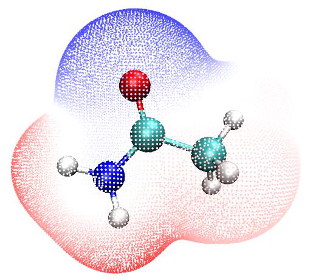
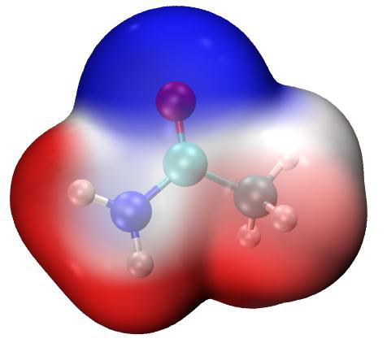
will be automatically set to 0. This trick never affects the quality of the resulting ESP colored vdW surface map, while computational cost is significantly reduced since the ESP evaluation for irrelevant grids is fully ignored.
4 Show ESP extrema on molecular surface simultaneously It is possible to append the ESP surface extrema on the graph. To do this, double click ESPext.bat, it will do all things that ESPpt.bat does, but it also outputs surfanalysis.pdb and moves it to the VMD folder. This file records all surface extrema. Then boot up VMD and input command pt or iso to draw corresponding map first, and then input ext, then ESPext.vmd will be activated to load the surfanalysis.pdb and render the surface extrema as small spheres. The combination of pt+ext and iso+ext are shown at left and right sides of the graph below, respectively. Note that in order to make ESP extrema at backside visible, I have changed the material of electron density isosurface to "Transparent" (namely enter "Graphics" - "Representation", switch to "density1.cub", change "Material" to "Transparent". If you want to make this as default setting, modify the ESPiso.vmd and change the "$id EdgyGlass" to "id Transparent")
In the graph above, the orange and cyan spheres correspond to the positions of maxima and minima of ESP on the vdW surface. You can also manually mark ESP values on the extrema by an image editor, see the plotESPsurf.pdf tutorial on how to do this. An easy way to get ESP value of an extreme is: Clicking "0" on keyboard to enter query mode, click center of a sphere, then its index will be shown on console window. Assume that the index is 3, you should input the following command in VMD console window
[atomselect top "index 3"] get beta then the ESP value will be shown. See the first line of surfanalysis.pdb for the unit of the printed ESP.
As I have mentioned in Section 4.12.1, even for a neutral system, there may be some surface minima (maxima) with positive (negative) value, which are often chemically insignificant and can be ignored. If you do not want to plot them on the graph, you can replace the content of ESPext.txt by that of examples\drawESP\ESPext_noinsig.txt. The additional four lines in this file with respect to ESPext.txt are used to remove these insignificant extrema.
5 Plotting ESP colored penetration map of vdW surface of monomers Here I use water tetrameter to illustrate how to plot this kind of map. The files used in this instance are provided in "examples\water_tetramer\fch" folder. The Gaussian input files of the four water molecules are 1/2/3/4.gjf, respectively, their coordinates were directly extracted from the optimized tetramer coordinate, which can be found in complex.gjf. Run these .gjf files by Gaussian, you will obtain the 1/2/3/4.fch. Notice that nosymm keyword has been employed, otherwise the Cartesian coordinates of the monomers will be no longer consistent with those in complex, because
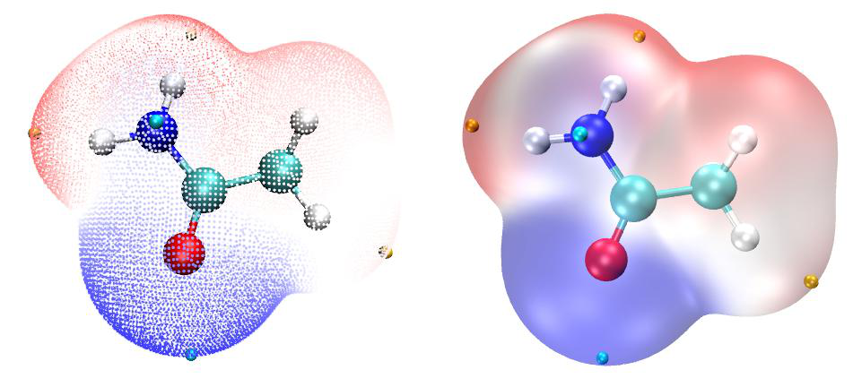
without this keyword Gaussian will automatically put the systems to standard orientation.
Copy the 1/2/3/4.fch files to the folder containing Multiwfn executable file, run ESPpt.bat, then Multiwfn will be invoked to calculate the four .fch files in turn, the resulting mol1/2/3/4.pdb and vtx1/2/3/4.pdb will be automatically moved to the VMD folder. Then boot up VMD and input pt2 to activate the ESPpt2.vmd script, you will immediately see left part of the graph below. If you run ESPiso.bat and then input iso2 in VMD instead, then the ESPiso2.vmd will be activated to draw the right part of the graph below based on the exported density1/2/3/4.cub and ESP1/2/3/4.cub.
From the map above, the inter-penetration between the vdW surfaces of the four monomers due to formation of hydrogen bonds can be clearly seen. In addition, the mapped colors show that the tetramer was formed in ESP positive-negative complementary way, revealing the electrostatic nature of the hydrogen bonds.
As an exercise, please try to plot the ESP colored vdW surface penetration map of Guanine-Cytosine dimer via above two ways, the .fch file of the two monomers can be downloaded at http://sobereva.com/multiwfn/extrafiles/GC_fch.rar. Notice that before plotting, you should manually delete the .pdb and .cub files generated for previous systems in VMD folder.
6 Hint: On the adjustment of material For some systems, the ESP colored map plotted via iso command is not quite ideal. For example, the following map looks messy
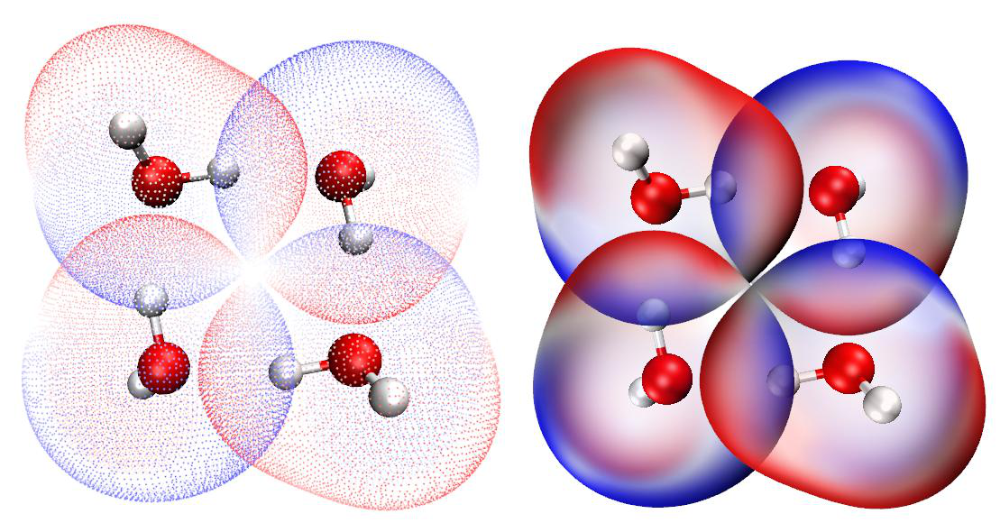
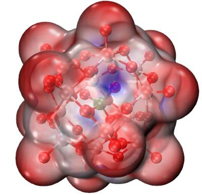
In this case, you can enter "Graphics" - "Materials", choose "EdgyGlass", which is the material currently used for representing the surface. Then adjust its each setting, especially the "Opacity". If we change the setting to below case, you will find the difference of ESP on the vdW surface now can be distinguished more clearly.
7 Hint: Plotting ESP mapped vdW surface for very huge systems Sometimes we need to plot ESP mapped surface for systems consisting of several hundreds of atoms, in this case even single point calculation using DFT with 6-31G* is very expensive or computationally infeasible. To plot the map for this case, my suggested steps are given below:
-
Perform single point task or optimization task via Grimme's xtb code (https://github.com/grimme-lab/xtb/). The xtb conducts all calculations based on GFN-xTB theory, which can be regarded as a semi-empirical version of DFT. --molden argument should be employed to make xtb output Molden input file (molden.input). Since xtb is extremely fast, even for a system composed of several hundreds of atoms, single point task can be finished within no more than 1 minute on a personal computer.
-
Load the molden.input into Multiwfn, then use corresponding option in subfunction 2 of main function 100 to export .fch file (e.g. xtb.fch).
-
Make sure that "cubegenpath" in
settings.inihas been properly set. Ensure that you have defined GAUSS_MEMDEF environment variable, see Section 5.7 for detail. -
load the xtb.fch into Multiwfn, using main function 5 to calculate grid data and export cube file for electron density and ESP in turn, the exported density.cub and totesp.cub should be manually renamed to density1.cub and ESP1.cub, respectively. Notice that "High-quality grid" should be employed since the system is large. The calculation of ESP is relatively time-consuming, for example, using a common Intel 4 cores CPU, the time cost for a system with 336 atoms takes half an hour.
-
Move the density1.cub and ESP1.cub, as well as the aforementioned ESPiso.vmd in examples\drawESP\ to VMD folder.
-
Boot up VMD and input source ESPiso.vmd in VMD console window. Now you can see the ESP colored vdW surface map. I suggest you also properly adjust material setting, as mentioned earlier. Below is a system containing 336 atoms.
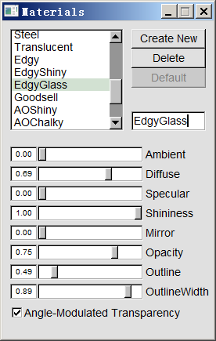
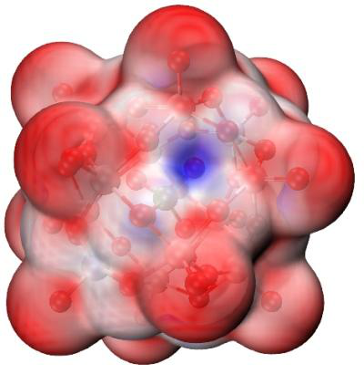
Even if you only have a personal computer with 4 cores, you can obtain the map above starting from a structure file with total time cost of no more than 1 hour. While if you have a server with dozens of cores, the graph can be obtained within 10 minutes.
It is worth to note although the xtb code is extremely fast, the ESP quality corresponding to the wavefunction generated by xtb is usually satisfactory. According to my test, no evident difference can be found between the ESP colored molecular surface graph generated based on the xtb wavefunction and the high-quality B3LYP/def2-TZVP wavefunction.
More information about this topic can be found in my article "Rapidly plotting electrostatic potential colored van der Waals surface for huge system" (in Chinese, http://sobereva.com/481).
8 Other worth noting points Color bar of ESP can be appended on the map, see illustration close to the end of this video: https://youtu.be/QFpDf_GimA0.
I strongly suggest readers to check the content of the .bat, .txt and .vmd files to make clear how they work. As you can see, the ESPpt.bat and ESPiso.bat can at most deal with four .fch file (1/2/3/4.fch), you can also extend them to more molecules. In the ESPpt2.vmd and ESPiso2.vmd, the variable "nsystem" was set to 4, namely at most mol4.pdb&vtx4.pdb and density4.cub&ESP4.cub will be loaded and plotted, clearly if you want to use the plotting scripts to simultaneously plot more monomers, the "nsystem" should be enlarged.
It is noteworthy that the value 0.15 in the ESPpt.txt is the grid spacing in quantitative molecular surface analysis; if you increase it, the surface vertices will become sparser, and calculation cost will be reduced. The default commands in the ESPiso.txt correspond to using high-quality grid for electron density while use low-quality grid for ESP (for saving computational cost purpose), this combination is suitable for most systems, but for extremely large systems, you may need to modify the file so that better quality grids are employed for electron density and ESP, respectively, otherwise the resulting isosurface may be unsmooth and the mapped color may be blurred.
For better graphical effects, users are suggested to manually change lower and upper limits of color scale, so that the variation of ESP on vdW surface can be represented by color as clearly as possible. For charged systems, the default color scale should always be changed, otherwise the vdW surface will be monochromatic. For these systems, you should load the input file, enter main function 12, select option 1 to carry out quantitative molecular surface analysis for ESP, copy the global minimal and maximal values of ESP to the text box for setting color scale, as shown below,
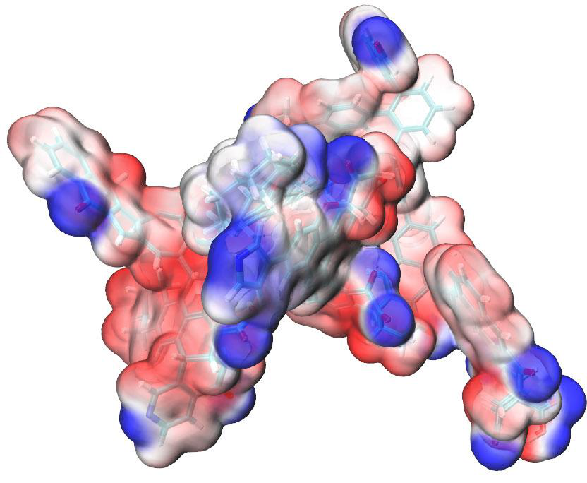
and then press ENTER button to make the setting take effect.
Note: If the map was plotted by ESPiso.bat, you should take the ESP values in a.u. and then set them as the color scale. However, if the map was plotted by ESPpt.bat, you should open the vtx1.pdb in VMD folder by text editor, the first few lines clearly indicate the unit used in this file, you should read ESP values in that unit from the Multiwfn console window and the set the color scale.
If you prefer to use eV rather than a.u. as ESP unit when using iso or iso2 commands to plot the ESP map, you should use ESPiso_eV.bat and ESPiso_eV.txt in “examples\drawESP” folder instead of the ESPiso.bat and ESPiso.txt respectively in aforementioned procedure, and you should manually edit the ESPiso.vmd and ESPiso2.vmd files, remove the # sign before the lines “set colorlow -0.8” and “set colorhigh 0.8”. In this case, the ESP data in .cub file will be in eV, and the default lower and upper limits of color scale will be -0.8 and 0.8 eV, respectively. The color bar drawn according to aforementioned YouTube tutorial video, will also be in eV.
In the case of extremely charged systems, such as DNA, when ESPpt.bat is used, the B-factor column may be unable to correctly record mapped ESP values because their magnitude is too large. In this situation, you should use ESPpt_pqr.bat, ESPpt_pqr.txt, ESPpt_pqr.vmd and ESPext_pqr.vmd in "examples\drawESP" folder instead of the ESPpt.bat, ESPpt.txt, ESPpt.vmd and ESPext.vmd mentioned above, respectively, in this case the "Charge" column of .pqr file will be used instead of B-factor column of .pqr file to record the data, the former can record a much larger range of data and the unit is always in a.u. Also note that the ESPext.txt and ESPext.bat are no longer needed, since extrema1.pqr is also exported and moved to VMD folder when you use ESPpt_pqr.bat.
9 On the plotting ESP colored vdW map under Linux The method described above can also be used in Linux (and maybe also MacOS) environment. In "examples\drawESP" folder, you can find ESPiso.sh, ESPpt.sh and ESPext.sh, they are corresponding Linux scripts of the .bat file mentioned above.
For example, you want to use ESPiso.sh to draw ESP colored vdW surface for cosplay.fchk, what you need to do is
- Install Multiwfn by strictly following Section 2.1.2. Install VMD in usual way
-
Copy ESPiso.sh, ESPiso.txt and ESPiso.vmd from "examples\drawESP" to a working directory
-
Copy cosplay.fchk to the working directory
- Edit the ESPiso.sh, change the 1.fchk to cosplay.fchk
- Enter the working directory, run chmod +x ./ESPiso.sh, and then run ./ESPiso.sh. (Then you
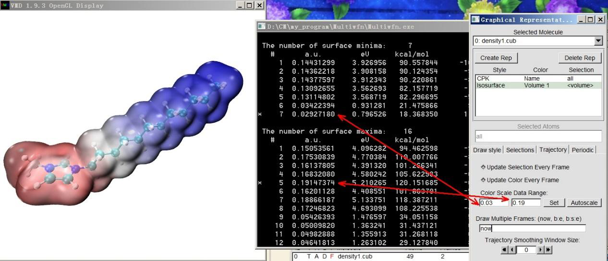
may find error prompts such as "File not found" and "No such file or directory". They are harmless, simply ignore them)
- Input vmd to boot up VMD, and then input source ESPiso.vmd in the VMD console window to plot the map
4.A.14 Very easily rendering cube files as state-of-the-art isosurface map via VMD script¶
Note: Chinese version of this tutorial is http://sobereva.com/483, it contains more discussions and examples than this section.
Introduction Although in most cases, the isosurface map directly drawn by Multiwfn is already satisfactory, better effect can be gained if you use VMD to render the isosurface. VMD can be freely obtained via http://www.ks.uiuc.edu/Research/vmd/. In fact, in Section 4.5.5 I already exemplified how to draw isosurface map based on cube files produced by Multiwfn, however the procedure is somewhat lengthy, and the effect cannot reach state-of-the-art level. In this section, I will show it is possible to use VMD script to plot very high-quality isosurface map via very few steps. The method in this section only works for Windows platform, but you may also be able to find a way to make the method work under Linux.
The VMD script is examples\scripts\showcub.vmd. Before using it, you should move it to VMD folder and add a line source showcub.vmd into the vmd.rc file in VMD folder, so that the four customized commands in this file will be available after booting up VMD. The commands are described below.
➢ cub and cubiso: Used for showing single cube file. Example of usage: cub DD : Draw DD.cub in current folder as isosurface map, both positive and negative parts are shown as green and blue with default isovalue of 0.05 and -0.05, respectively.
cubiso 0.02 : Changing isovalue of both positive and negative parts to 0.02. cub DD 0.02 : Equivalent to using cub DD and then cubiso 0.02. ➢ cub2 and cub2iso: Used for showing two cube files simultaneously. Example of usage: cub2 f+ f- : Draw f+.cub and f-.cub in current folder as green and blue isosurfaces, respectively. Note that only positive part of the cubes will be shown.
cub2iso 0.02 : Changing isovalue of both isosurfaces to 0.02. cub2 f+ f- 0.02 : Equivalent to using cub2 f+ f- and then cub2iso 0.02. After showing the isosurfaces in VMD graphical window using above commands, you can use batch file VMDrender_full.bat or VMDrender_noshadow.bat in examples\scripts folder to invoke Tachyon render to get better effect, as will be illustrated later. The difference between the two files is that the shadow effect is enabled in the former while disabled in the latter.
Next, I will give two practical examples. Before following them, please copy the aforementioned two .bat files and showcub.vmd to VMD folder, and then properly set up vmd.rc. The VMD version I am using is 1.9.3.
Example 1: Spin density map of C4H8 singlet biradical Boot up Multiwfn and input examples\C4H8.wfn // .wfn file of C4H8 singlet biradical
Multiwfn session
- 5 — Calculate grid data
- 5 — Spin density
- 3 — High-quality grid
- 2 — Export the grid data to spindensity.cub in current folder Now, move the spindensity.cub to VMD folder, boot up VMD and input cub spindensity 0.01 in VMD console window, you will see isosurface map of the cube file with isovalue of 0.01 has been shown in the graphical window.
In order to get better effect, in VMD we choose "File" - "Render" - "Tachyon", then click "Start Rendering", you will find vmdscene.dat has appeared in VMD folder. Now double click VMDrender_full.bat, which will use vmdscene.dat as input file of Tachyon render to yield an image file named full.bmp in current folder. The resulting graph is shown below, the quality is clearly very good!
Example 2: Hole-electron map of NH2-biphenyl-NO2 The hole-electron analysis illustrated in Section 4.18.1 is extremely useful in understanding the nature of electron excitation. Although Multiwfn can directly plot hole and electron distributions simultaneously in the built-in GUI window, much better effect can be obtained by means of VMD.
I still use the NH2-biphenyl-NO2 analyzed in Section 4.18.1 as example, we will plot isosurface
of both hole and electron of S0→S2 transition via VMD. To do so, boot up Multiwfn and input
Multiwfn session
- examples\excit\D-pi-A.fchk 18 — Electron excitation analysis
- 1 — Hole-electron analysis examples\excit\D-pi-A.out
- 2 — Study excitation between ground state (S0) and the second excited state (S2)
- 1 — Calculate distribution of hole, electron and so on as well as various indices
- 3 — High-quality grid After the calculation is finished, choose options 10 and 11 in turn to export grid data of hole and electron to hole.cub and electron.cub in current folder, respectively. Then move them to VMD folder, boot up VMD and input cub2 electron hole. You will find no isosurface has been shown, this is because the default isovalue (0.05) is not suitable for grid data. We use cub2 command to test different isovalues, finally we find after inputting cub2 0.005 the graphical effect is satisfactory, that is the isosurfaces can substantially represent distribution character of both hole and electron. The current graph shown in the VMD graphical window is shown below, green and blue correspond to electron and hole, respectively.
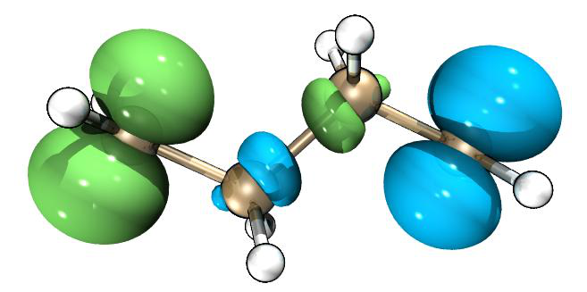
Current effect is already nice, however, the overlapping character between hole and electron cannot be clearly recognized. In order to improve the effect, we enter "Graphics" - "Representation", set "Material" to "EdgyGlass", then choose "electron.cub" in "Selected Molecules", also set its "Material" to "EdgyGlass". Next, choose "File" - "Render" - "Tachyon", then click "Start Rendering". If this time we directly use VMDrender_full.bat to render the graph, you will find the graph is too dark. In order to get best effect, we open VMDrender_full.bat using text editor, change the "-trans_raster3d" to "-trans_vmd", and then add an argument "-shadow_filter_off". Finally, we execute this .bat file to yield full.bmp, which is shown below, the effect is perfect! (Note that I used Photoshop to increase the brightness of the graph by 20)
4.A.15 Calculating information-theoretic quantities and some relevant quantities¶
Prof. Shubin Liu proposed many information-theoretic quantities and applied them to a wide variety of chemical problems, and got many valuable findings. Multiwfn is able to calculate all information-theoretic quantities. There is a document "Calculating information-theoretic quantities and some relevant quantities by Multiwfn" in "Resources" page of Multiwfn website dedicated to describing how to use Multiwfn to calculate these quantities, please check it.
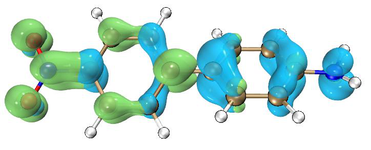
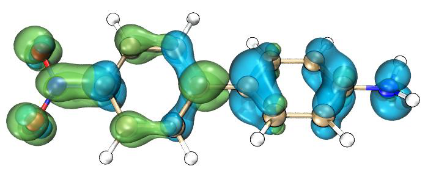